モデル間で食い違い（マウスオーバーで相手の値）PDFテキストレイヤに見つからない自動チェックで警告・エラー片方のモデルにしかない行
| 文書 | ページ | 食い違いのあるページ | 食い違いセル | 要確認ページ | claude-haiku-5-5 | claude-sonnet-5-5 | ||||||||
|---|---|---|---|---|---|---|---|---|---|---|---|---|---|---|
| 行数 | error | warn | テキスト不一致 | $（実費） | 行数 | error | warn | テキスト不一致 | $（実費） | |||||
| kaigo_kyotaku_r0604 | 86 | 21 | 61 | 28 | 1075 | 28 | 14 | 24 | 0.125 | 1075 | 31 | 5 | 3 | 1.650 |
全 86 ページのうち、要確認（エラー・警告・テキスト不一致・食い違いのいずれかがある）28 ページだけを以下に表示する。
| ページ | 種類 | claude-haiku-5-5 | claude-sonnet-5-5 | 食い違い | ||||||||
|---|---|---|---|---|---|---|---|---|---|---|---|---|
| 行数 | error | warn | テキスト不一致 | $ | 行数 | error | warn | テキスト不一致 | $ | セル | ||
| kaigo_kyotaku_r0604_p44 (印字p.) | 8 | 0 | 2 | 0/24 | 0.003453 | 8 | 0 | 2 | 0/24 | 0.043258 | 0 | |
| kaigo_kyotaku_r0604_p47 (印字p.) | 6 | 0 | 1 | 0/18 | 0.003816 | 6 | 0 | 1 | 0/18 | 0.040058 | 0 | |
| kaigo_kyotaku_r0604_p49 (印字p.) | 7 | 0 | 1 | 0/21 | 0.003252 | 7 | 0 | 1 | 0/21 | 0.043378 | 0 | |
| kaigo_kyotaku_r0604_p51 (印字p.) | 6 | 0 | 0 | 0/15 | 0.005244 | 6 | 0 | 0 | 0/15 | 0.043048 | 2 | |
| kaigo_kyotaku_r0604_p52 (印字p.) | 8 | 0 | 1 | 0/20 | 0.003869 | 8 | 0 | 0 | 0/20 | 0.043608 | 8 | |
| kaigo_kyotaku_r0604_p55 (印字p.) | 17 | 0 | 0 | 1/51 | 0.002859 | 17 | 0 | 0 | 0/51 | 0.041068 | 1 | |
| kaigo_kyotaku_r0604_p56 (印字p.) | 15 | 4 | 1 | 0/37 | 0.005228 | 15 | 4 | 0 | 0/37 | 0.065748 | 9 | |
| kaigo_kyotaku_r0604_p57 (印字p.) | 10 | 5 | 8 | 0/20 | 0.004823 | 10 | 5 | 1 | 0/20 | 0.055818 | 4 | |
| kaigo_kyotaku_r0604_p58 (印字p.) | 16 | 0 | 0 | 1/48 | 0.002879 | 16 | 0 | 0 | 0/48 | 0.040628 | 1 | |
| kaigo_kyotaku_r0604_p59 (印字p.) | 11 | 4 | 0 | 0/33 | 0.002795 | 11 | 4 | 0 | 0/33 | 0.037318 | 0 | |
| kaigo_kyotaku_r0604_p61 (印字p.) | 8 | 4 | 0 | 0/16 | 0.002358 | 8 | 4 | 0 | 0/16 | 0.031568 | 0 | |
| kaigo_kyotaku_r0604_p71 (印字p.) | 18 | 2 | 0 | 0/53 | 0.004095 | 18 | 2 | 0 | 0/53 | 0.044658 | 0 | |
| kaigo_kyotaku_r0604_p72 (印字p.) | 20 | 3 | 0 | 0/56 | 0.003645 | 20 | 3 | 0 | 1/56 | 0.046278 | 2 | |
| kaigo_kyotaku_r0604_p74 (印字p.) | 21 | 3 | 0 | 0/62 | 0.003671 | 21 | 3 | 0 | 0/62 | 0.045028 | 0 | |
| kaigo_kyotaku_r0604_p75 (印字p.) | 13 | 1 | 0 | 2/28 | 0.003533 | 13 | 1 | 0 | 0/28 | 0.042938 | 4 | |
| kaigo_kyotaku_r0604_p78 (印字p.) | 20 | 2 | 0 | 1/59 | 0.004009 | 20 | 2 | 0 | 0/59 | 0.045318 | 1 | |
| kaigo_kyotaku_r0604_p79 (印字p.) | 23 | 0 | 0 | 0/71 | 0.004696 | 23 | 3 | 0 | 0/68 | 0.047778 | 8 | |
| kaigo_kyotaku_r0604_p83 (印字p.) | 26 | 0 | 0 | 2/77 | 0.004043 | 26 | 0 | 0 | 0/77 | 0.047708 | 2 | |
| kaigo_kyotaku_r0604_p84 (印字p.) | 6 | 0 | 0 | 0/18 | 0.002675 | 6 | 0 | 0 | 1/18 | 0.032968 | 1 | |
| kaigo_kyotaku_r0604_p97 (印字p.) | 8 | 0 | 0 | 3/19 | 0.002357 | 8 | 0 | 0 | 0/19 | 0.032098 | 3 | |
| kaigo_kyotaku_r0604_p119 (印字p.) | 11 | 0 | 0 | 2/32 | 0.002792 | 11 | 0 | 0 | 0/32 | 0.036558 | 2 | |
| kaigo_kyotaku_r0604_p124 (印字p.) | 15 | 0 | 0 | 2/39 | 0.002574 | 15 | 0 | 0 | 0/39 | 0.039648 | 2 | |
| kaigo_kyotaku_r0604_p127 (印字p.) | 11 | 0 | 0 | 2/28 | 0.002417 | 11 | 0 | 0 | 0/28 | 0.035868 | 2 | |
| kaigo_kyotaku_r0604_p130 (印字p.) | 15 | 0 | 0 | 2/39 | 0.002973 | 15 | 0 | 0 | 0/39 | 0.038938 | 2 | |
| kaigo_kyotaku_r0604_p131 (印字p.) | 11 | 0 | 0 | 2/28 | 0.001804 | 11 | 0 | 0 | 0/28 | 0.034598 | 2 | |
| kaigo_kyotaku_r0604_p135 (印字p.) | 21 | 0 | 0 | 0/53 | 0.003784 | 21 | 0 | 0 | 1/53 | 0.049418 | 1 | |
| kaigo_kyotaku_r0604_p145 (印字p.) | 10 | 0 | 0 | 1/28 | 0.00268 | 10 | 0 | 0 | 0/28 | 0.036098 | 1 | |
| kaigo_kyotaku_r0604_p148 (印字p.) | 8 | 0 | 0 | 3/19 | 0.001651 | 8 | 0 | 0 | 0/19 | 0.031908 | 3 | |
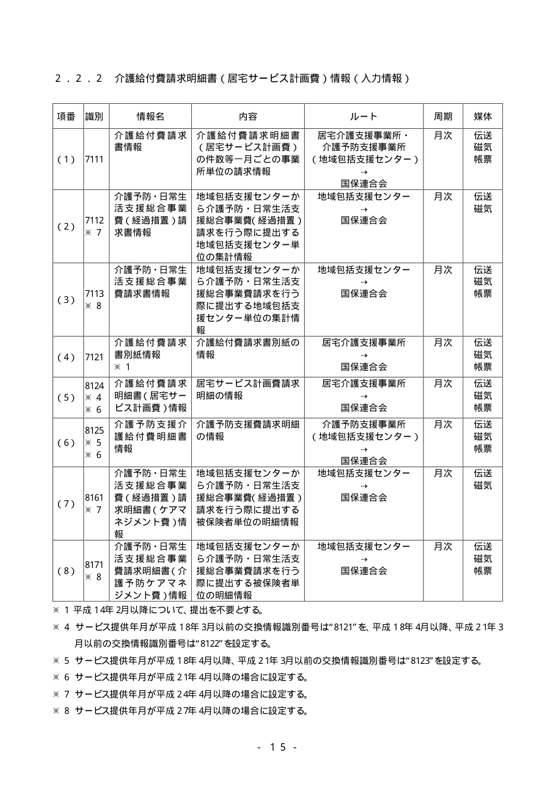
| 項番 | 項目名 | 属性 | 桁数 | 内容 | 必須 | 備考 | その他の列 |
|---|---|---|---|---|---|---|---|
| (1) | 介護給付費請求書情報 | 介護給付費請求明細書（居宅サービス計画費）の件数等一月ごとの事業所単位の請求情報 | 識別: 7111 ルート: 居宅介護支援事業所・ 介護予防支援事業所 （地域包括支援センター） → 国保連合会 周期: 月次 媒体: 伝送 磁気 帳票 | ||||
| (2) | 介護予防・日常生活支援総合事業費（経過措置）請求書情報 | 地域包括支援センターから介護予防・日常生活支援総合事業費（経過措置）請求を行う際に提出する地域包括支援センター単位の集計情報 | 識別: 7112 ※ 7 ルート: 地域包括支援センター → 国保連合会 周期: 月次 媒体: 伝送 磁気 | ||||
| (3) | 介護予防・日常生活支援総合事業費請求書情報 | 地域包括支援センターから介護予防・日常生活支援総合事業費請求を行う際に提出する地域包括支援センター単位の集計情報 | 識別: 7113 ※ 8 ルート: 地域包括支援センター → 国保連合会 周期: 月次 媒体: 伝送 磁気 帳票 | ||||
| (4) | 介護給付費請求書別紙情報 ※ 1 | 介護給付費請求書別紙の情報 | 識別: 7121 ルート: 居宅介護支援事業所 → 国保連合会 周期: 月次 媒体: 伝送 磁気 帳票 | ||||
| (5) | 介護給付費請求明細書（居宅サービス計画費）情報 | 居宅サービス計画費請求明細の情報 | 識別: 8124 ※ 4 ※ 6 ルート: 居宅介護支援事業所 → 国保連合会 周期: 月次 媒体: 伝送 磁気 帳票 | ||||
| (6) | 介護予防支援介護給付費明細書情報 | 介護予防支援費請求明細の情報 | 識別: 8125 ※ 5 ※ 6 ルート: 介護予防支援事業所 （地域包括支援センター） → 国保連合会 周期: 月次 媒体: 伝送 磁気 帳票 | ||||
| (7) | 介護予防・日常生活支援総合事業費（経過措置）請求明細書（ケアマネジメント費）情報 | 地域包括支援センターから介護予防・日常生活支援総合事業費（経過措置）請求を行う際に提出する被保険者単位の明細情報 | 識別: 8161 ※ 7 ルート: 地域包括支援センター → 国保連合会 周期: 月次 媒体: 伝送 磁気 | ||||
| (8) | 介護予防・日常生活支援総合事業費請求明細書（介護予防ケアマネジメント費）情報 | 地域包括支援センターから介護予防・日常生活支援総合事業費請求を行う際に提出する被保険者単位の明細情報 | 識別: 8171 ※ 8 ルート: 地域包括支援センター → 国保連合会 周期: 月次 媒体: 伝送 磁気 帳票 |
| 項番 | 項目名 | 属性 | 桁数 | 内容 | 必須 | 備考 | その他の列 |
|---|---|---|---|---|---|---|---|
| (1) | 介護給付費請求書情報 | 介護給付費請求明細書(居宅サービス計画費)の件数等一月ごとの事業所単位の請求情報 | 識別: 7111 ルート: 居宅介護支援事業所・介護予防支援事業所(地域包括支援センター) → 国保連合会 周期: 月次 媒体: 伝送 磁気 帳票 | ||||
| (2) | 介護予防・日常生活支援総合事業費(経過措置)請求書情報 | 地域包括支援センターから介護予防・日常生活支援総合事業費(経過措置)請求を行う際に提出する地域包括支援センター単位の集計情報 | 識別: 7112 ※7 ルート: 地域包括支援センター → 国保連合会 周期: 月次 媒体: 伝送 磁気 | ||||
| (3) | 介護予防・日常生活支援総合事業費請求書情報 | 地域包括支援センターから介護予防・日常生活支援総合事業費請求を行う際に提出する地域包括支援センター単位の集計情報 | 識別: 7113 ※8 ルート: 地域包括支援センター → 国保連合会 周期: 月次 媒体: 伝送 磁気 帳票 | ||||
| (4) | 介護給付費請求書別紙情報 ※1 | 介護給付費請求書別紙の情報 | 識別: 7121 ルート: 居宅介護支援事業所 → 国保連合会 周期: 月次 媒体: 伝送 磁気 帳票 | ||||
| (5) | 介護給付費請求明細書(居宅サービス計画費)情報 | 居宅サービス計画費請求明細の情報 | 識別: 8124 ※4 ※6 ルート: 居宅介護支援事業所 → 国保連合会 周期: 月次 媒体: 伝送 磁気 帳票 | ||||
| (6) | 介護予防支援介護給付費明細書情報 | 介護予防支援費請求明細の情報 | 識別: 8125 ※5 ※6 ルート: 介護予防支援事業所(地域包括支援センター) → 国保連合会 周期: 月次 媒体: 伝送 磁気 帳票 | ||||
| (7) | 介護予防・日常生活支援総合事業費(経過措置)請求明細書(ケアマネジメント費)情報 | 地域包括支援センターから介護予防・日常生活支援総合事業費(経過措置)請求を行う際に提出する被保険者単位の明細情報 | 識別: 8161 ※7 ルート: 地域包括支援センター → 国保連合会 周期: 月次 媒体: 伝送 磁気 | ||||
| (8) | 介護予防・日常生活支援総合事業費請求明細書(介護予防ケアマネジメント費)情報 | 地域包括支援センターから介護予防・日常生活支援総合事業費請求を行う際に提出する被保険者単位の明細情報 | 識別: 8171 ※8 ルート: 地域包括支援センター → 国保連合会 周期: 月次 媒体: 伝送 磁気 帳票 |
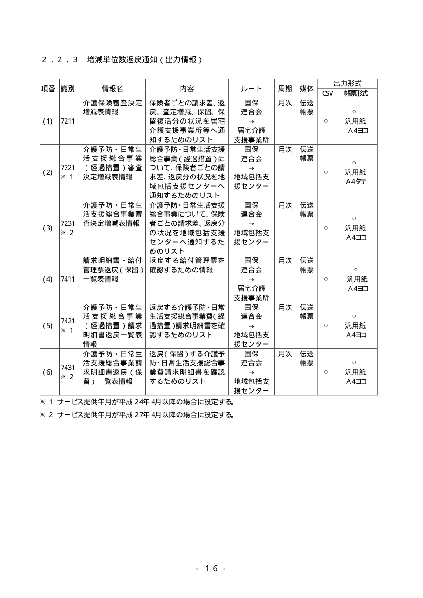
| 項番 | 項目名 | 属性 | 桁数 | 内容 | 必須 | 備考 | その他の列 |
|---|---|---|---|---|---|---|---|
| (1) | 介護保険審査決定増減表情報 | 保険者ごとの請求差、返戻、査定増減、保留、保留復活分の状況を居宅介護支援事業所等へ通知するためのリスト | 識別: 7211 ルート: 国保連合会→居宅介護支援事業所 周期: 月次 媒体: 伝送 帳票 出力形式 > CSV: ○ 出力形式 > 帳票形式: ○ 汎用紙 A4ヨコ | ||||
| (2) | 介護予防・日常生活支援総合事業（経過措置）審査決定増減表情報 | 介護予防・日常生活支援総合事業(経過措置)について、保険者ごとの請求差、返戻分の状況を地域包括支援センターへ通知するためのリスト | 識別: 7221※1 ルート: 国保連合会→地域包括支援センター 周期: 月次 媒体: 伝送 帳票 出力形式 > CSV: ○ 出力形式 > 帳票形式: ○ 汎用紙 A4タテ | ||||
| (3) | 介護予防・日常生活支援総合事業審査決定増減表情報 | 介護予防・日常生活支援総合事業について、保険者ごとの請求差、返戻分の状況を地域包括支援センターへ通知するためのリスト | 識別: 7231※2 ルート: 国保連合会→地域包括支援センター 周期: 月次 媒体: 伝送 帳票 出力形式 > CSV: ○ 出力形式 > 帳票形式: ○ 汎用紙 A4ヨコ | ||||
| (4) | 請求明細書・給付管理票返戻（保留）一覧表情報 | 返戻する給付管理票を確認するための情報 | 識別: 7411 ルート: 国保連合会→居宅介護支援事業所 周期: 月次 媒体: 伝送 帳票 出力形式 > CSV: ○ 出力形式 > 帳票形式: ○ 汎用紙 A4ヨコ | ||||
| (5) | 介護予防・日常生活支援総合事業（経過措置）請求明細書返戻一覧表情報 | 返戻する介護予防・日常生活支援総合事業費(経過措置)請求明細書を確認するためのリスト | 識別: 7421※1 ルート: 国保連合会→地域包括支援センター 周期: 月次 媒体: 伝送 帳票 出力形式 > CSV: ○ 出力形式 > 帳票形式: ○ 汎用紙 A4ヨコ | ||||
| (6) | 介護予防・日常生活支援総合事業請求明細書返戻（保留）一覧表情報 | 返戻(保留)する介護予防・日常生活支援総合事業費請求明細書を確認するためのリスト | 識別: 7431※2 ルート: 国保連合会→地域包括支援センター 周期: 月次 媒体: 伝送 帳票 出力形式 > CSV: ○ 出力形式 > 帳票形式: ○ 汎用紙 A4ヨコ |
| 項番 | 項目名 | 属性 | 桁数 | 内容 | 必須 | 備考 | その他の列 |
|---|---|---|---|---|---|---|---|
| (1) | 介護保険審査決定増減表情報 | 保険者ごとの請求差、返戻、査定増減、保留、保留復活分の状況を居宅介護支援事業所等へ通知するためのリスト | 識別: 7211 ルート: 国保連合会→居宅介護支援事業所 周期: 月次 媒体: 伝送帳票 出力形式 > CSV: ○ 出力形式 > 帳票形式: ○ 汎用紙 A4ヨコ | ||||
| (2) | 介護予防・日常生活支援総合事業(経過措置)審査決定増減表情報 | 介護予防・日常生活支援総合事業(経過措置)について、保険者ごとの請求差、返戻分の状況を地域包括支援センターへ通知するためのリスト | 識別: 7221 ※1 ルート: 国保連合会→地域包括支援センター 周期: 月次 媒体: 伝送帳票 出力形式 > CSV: ○ 出力形式 > 帳票形式: ○ 汎用紙 A4タテ | ||||
| (3) | 介護予防・日常生活支援総合事業審査決定増減表情報 | 介護予防・日常生活支援総合事業について、保険者ごとの請求差、返戻分の状況を地域包括支援センターへ通知するためのリスト | 識別: 7231 ※2 ルート: 国保連合会→地域包括支援センター 周期: 月次 媒体: 伝送帳票 出力形式 > CSV: ○ 出力形式 > 帳票形式: ○ 汎用紙 A4ヨコ | ||||
| (4) | 請求明細書・給付管理票返戻(保留)一覧表情報 | 返戻する給付管理票を確認するための情報 | 識別: 7411 ルート: 国保連合会→居宅介護支援事業所 周期: 月次 媒体: 伝送帳票 出力形式 > CSV: ○ 出力形式 > 帳票形式: ○ 汎用紙 A4ヨコ | ||||
| (5) | 介護予防・日常生活支援総合事業(経過措置)請求明細書返戻一覧表情報 | 返戻する介護予防・日常生活支援総合事業費(経過措置)請求明細書を確認するためのリスト | 識別: 7421 ※1 ルート: 国保連合会→地域包括支援センター 周期: 月次 媒体: 伝送帳票 出力形式 > CSV: ○ 出力形式 > 帳票形式: ○ 汎用紙 A4ヨコ | ||||
| (6) | 介護予防・日常生活支援総合事業請求明細書返戻(保留)一覧表情報 | 返戻(保留)する介護予防・日常生活支援総合事業費請求明細書を確認するためのリスト | 識別: 7431 ※2 ルート: 国保連合会→地域包括支援センター 周期: 月次 媒体: 伝送帳票 出力形式 > CSV: ○ 出力形式 > 帳票形式: ○ 汎用紙 A4ヨコ |
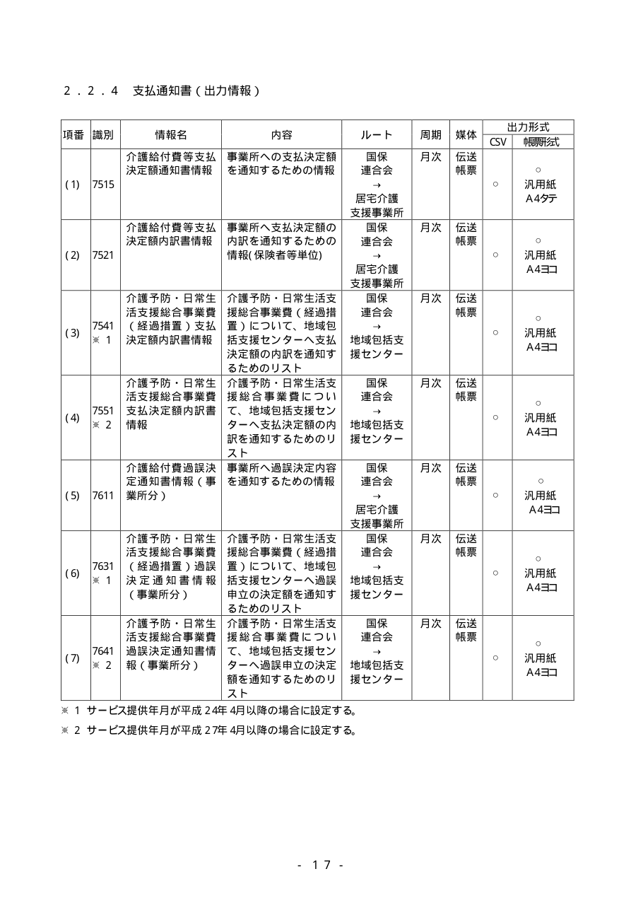
| 項番 | 項目名 | 属性 | 桁数 | 内容 | 必須 | 備考 | その他の列 |
|---|---|---|---|---|---|---|---|
| (1) | 介護給付費等支払決定額通知書情報 | 事業所への支払決定額を通知するための情報 | 識別: 7515 ルート: 国保連合会→居宅介護支援事業所 周期: 月次 媒体: 伝送 帳票 出力形式 > CSV: ○ 出力形式 > 帳票形式: ○ 汎用紙 A4タテ | ||||
| (2) | 介護給付費等支払決定額内訳書情報 | 事業所へ支払決定額の内訳を通知するための情報(保険者等単位) | 識別: 7521 ルート: 国保連合会→居宅介護支援事業所 周期: 月次 媒体: 伝送 帳票 出力形式 > CSV: ○ 出力形式 > 帳票形式: ○ 汎用紙 A4ヨコ | ||||
| (3) | 介護予防・日常生活支援総合事業費（経過措置）支払決定額内訳書情報 | 介護予防・日常生活支援総合事業費（経過措置）について、地域包括支援センターへ支払決定額の内訳を通知するためのリスト | 識別: 7541 ※ 1 ルート: 国保連合会→地域包括支援センター 周期: 月次 媒体: 伝送 帳票 出力形式 > CSV: ○ 出力形式 > 帳票形式: ○ 汎用紙 A4ヨコ | ||||
| (4) | 介護予防・日常生活支援総合事業費支払決定額内訳書情報 | 介護予防・日常生活支援総合事業費について、地域包括支援センターへ支払決定額の内訳を通知するためのリスト | 識別: 7551 ※ 2 ルート: 国保連合会→地域包括支援センター 周期: 月次 媒体: 伝送 帳票 出力形式 > CSV: ○ 出力形式 > 帳票形式: ○ 汎用紙 A4ヨコ | ||||
| (5) | 介護給付費過誤決定通知書情報（事業所分） | 事業所へ過誤決定内容を通知するための情報 | 識別: 7611 ルート: 国保連合会→居宅介護支援事業所 周期: 月次 媒体: 伝送 帳票 出力形式 > CSV: ○ 出力形式 > 帳票形式: ○ 汎用紙 A4ヨコ | ||||
| (6) | 介護予防・日常生活支援総合事業費（経過措置）過誤決定通知書情報（事業所分） | 介護予防・日常生活支援総合事業費（経過措置）について、地域包括支援センターへ過誤申立の決定額を通知するためのリスト | 識別: 7631 ※ 1 ルート: 国保連合会→地域包括支援センター 周期: 月次 媒体: 伝送 帳票 出力形式 > CSV: ○ 出力形式 > 帳票形式: ○ 汎用紙 A4ヨコ | ||||
| (7) | 介護予防・日常生活支援総合事業費過誤決定通知書情報（事業所分） | 介護予防・日常生活支援総合事業費について、地域包括支援センターへ過誤申立の決定額を通知するためのリスト | 識別: 7641 ※ 2 ルート: 国保連合会→地域包括支援センター 周期: 月次 媒体: 伝送 帳票 出力形式 > CSV: ○ 出力形式 > 帳票形式: ○ 汎用紙 A4ヨコ |
| 項番 | 項目名 | 属性 | 桁数 | 内容 | 必須 | 備考 | その他の列 |
|---|---|---|---|---|---|---|---|
| (1) | 介護給付費等支払決定額通知書情報 | 事業所への支払決定額を通知するための情報 | 識別: 7515 ルート: 国保連合会 → 居宅介護支援事業所 周期: 月次 媒体: 伝送 帳票 出力形式 > CSV: ○ 出力形式 > 帳票形式: ○ 汎用紙 A4タテ | ||||
| (2) | 介護給付費等支払決定額内訳書情報 | 事業所へ支払決定額の内訳を通知するための情報(保険者等単位) | 識別: 7521 ルート: 国保連合会 → 居宅介護支援事業所 周期: 月次 媒体: 伝送 帳票 出力形式 > CSV: ○ 出力形式 > 帳票形式: ○ 汎用紙 A4ヨコ | ||||
| (3) | 介護予防・日常生活支援総合事業費(経過措置)支払決定額内訳書情報 | 介護予防・日常生活支援総合事業費(経過措置)について、地域包括支援センターへ支払決定額の内訳を通知するためのリスト | 識別: 7541 ※1 ルート: 国保連合会 → 地域包括支援センター 周期: 月次 媒体: 伝送 帳票 出力形式 > CSV: ○ 出力形式 > 帳票形式: ○ 汎用紙 A4ヨコ | ||||
| (4) | 介護予防・日常生活支援総合事業費支払決定額内訳書情報 | 介護予防・日常生活支援総合事業費について、地域包括支援センターへ支払決定額の内訳を通知するためのリスト | 識別: 7551 ※2 ルート: 国保連合会 → 地域包括支援センター 周期: 月次 媒体: 伝送 帳票 出力形式 > CSV: ○ 出力形式 > 帳票形式: ○ 汎用紙 A4ヨコ | ||||
| (5) | 介護給付費過誤決定通知書情報(事業所分) | 事業所へ過誤決定内容を通知するための情報 | 識別: 7611 ルート: 国保連合会 → 居宅介護支援事業所 周期: 月次 媒体: 伝送 帳票 出力形式 > CSV: ○ 出力形式 > 帳票形式: ○ 汎用紙 A4ヨコ | ||||
| (6) | 介護予防・日常生活支援総合事業費(経過措置)過誤決定通知書情報(事業所分) | 介護予防・日常生活支援総合事業費(経過措置)について、地域包括支援センターへ過誤申立の決定額を通知するためのリスト | 識別: 7631 ※1 ルート: 国保連合会 → 地域包括支援センター 周期: 月次 媒体: 伝送 帳票 出力形式 > CSV: ○ 出力形式 > 帳票形式: ○ 汎用紙 A4ヨコ | ||||
| (7) | 介護予防・日常生活支援総合事業費過誤決定通知書情報(事業所分) | 介護予防・日常生活支援総合事業費について、地域包括支援センターへ過誤申立の決定額を通知するためのリスト | 識別: 7641 ※2 ルート: 国保連合会 → 地域包括支援センター 周期: 月次 媒体: 伝送 帳票 出力形式 > CSV: ○ 出力形式 > 帳票形式: ○ 汎用紙 A4ヨコ |
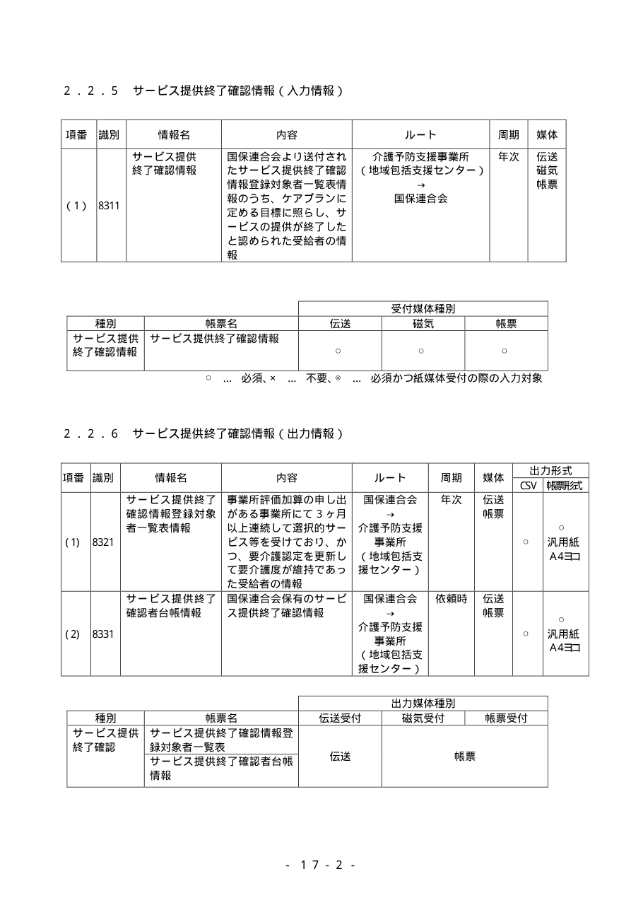
| 項番 | 項目名 | 属性 | 桁数 | 内容 | 必須 | 備考 | その他の列 |
|---|---|---|---|---|---|---|---|
| (1) | サービス提供終了確認情報 | 国保連合会より送付されたサービス提供終了確認情報登録対象者一覧表情報のうち、ケアプランに定める目標に照らし、サービスの提供が終了したと認められた受給者の情報 | 識別: 8311 ルート: 介護予防支援事業所（地域包括支援センター） → 国保連合会 周期: 年次 媒体: 伝送 磁気 帳票 |
| 項番 | 項目名 | 属性 | 桁数 | 内容 | 必須 | 備考 | その他の列 |
|---|---|---|---|---|---|---|---|
| サービス提供終了確認情報 | 種別: サービス提供終了確認情報 受付媒体種別 > 伝送: ○ 受付媒体種別 > 磁気: ○ 受付媒体種別 > 帳票: ○ |
| 項番 | 項目名 | 属性 | 桁数 | 内容 | 必須 | 備考 | その他の列 |
|---|---|---|---|---|---|---|---|
| (1) | サービス提供終了確認情報登録対象者一覧表情報 | 事業所評価加算の申し出がある事業所にて3ヶ月以上連続して選択的サービス等を受けており、かつ、要介護認定を更新して要介護度が維持であった受給者の情報 | 識別: 8321 ルート: 国保連合会 → 介護予防支援事業所 （地域包括支援センター） 周期: 年次 媒体: 伝送 帳票 出力形式 > CSV: ○ 出力形式 > 帳票形式: ○ 汎用紙A4ヨコ | ||||
| (2) | サービス提供終了確認者台帳情報 | 国保連合会保有のサービス提供終了確認情報 | 識別: 8331 ルート: 国保連合会 → 介護予防支援事業所 （地域包括支援センター） 周期: 依頼時 媒体: 伝送 帳票 出力形式 > CSV: ○ 出力形式 > 帳票形式: ○ 汎用紙A4ヨコ |
| 項番 | 項目名 | 属性 | 桁数 | 内容 | 必須 | 備考 | その他の列 |
|---|---|---|---|---|---|---|---|
| サービス提供終了確認 > サービス提供終了確認情報登録対象者一覧表 | 種別: サービス提供終了確認 出力媒体種別 > 伝送受付: 伝送 出力媒体種別 > 磁気受付: 帳票 出力媒体種別 > 帳票受付: 帳票 | ||||||
| サービス提供終了確認 > サービス提供終了確認者台帳情報 | 種別: サービス提供終了確認 出力媒体種別 > 伝送受付: 伝送 出力媒体種別 > 磁気受付: 帳票 出力媒体種別 > 帳票受付: 帳票 |
| 項番 | 項目名 | 属性 | 桁数 | 内容 | 必須 | 備考 | その他の列 |
|---|---|---|---|---|---|---|---|
| (1) | サービス提供終了確認情報 | 国保連合会より送付されたサービス提供終了確認情報登録対象者一覧表情報のうち、ケアプランに定める目標に照らし、サービスの提供が終了したと認められた受給者の情報 | 識別: 8311 ルート: 介護予防支援事業所（地域包括支援センター） → 国保連合会 周期: 年次 媒体: 伝送 磁気 帳票 |
| 項番 | 項目名 | 属性 | 桁数 | 内容 | 必須 | 備考 | その他の列 |
|---|---|---|---|---|---|---|---|
| サービス提供終了確認情報 | 種別: サービス提供終了確認情報 受付媒体種別 > 伝送: ○ 受付媒体種別 > 磁気: ○ 受付媒体種別 > 帳票: ○ |
| 項番 | 項目名 | 属性 | 桁数 | 内容 | 必須 | 備考 | その他の列 |
|---|---|---|---|---|---|---|---|
| (1) | サービス提供終了確認情報登録対象者一覧表情報 | 事業所評価加算の申し出がある事業所にて3ヶ月以上連続して選択的サービス等を受けており、かつ、要介護認定を更新して要介護度が維持であった受給者の情報 | 識別: 8321 ルート: 国保連合会 → 介護予防支援事業所（地域包括支援センター） 周期: 年次 媒体: 伝送 帳票 出力形式 > CSV: ○ 出力形式 > 帳票形式: ○ 汎用紙 A4ヨコ | ||||
| (2) | サービス提供終了確認者台帳情報 | 国保連合会保有のサービス提供終了確認情報 | 識別: 8331 ルート: 国保連合会 → 介護予防支援事業所（地域包括支援センター） 周期: 依頼時 媒体: 伝送 帳票 出力形式 > CSV: ○ 出力形式 > 帳票形式: ○ 汎用紙 A4ヨコ |
| 項番 | 項目名 | 属性 | 桁数 | 内容 | 必須 | 備考 | その他の列 |
|---|---|---|---|---|---|---|---|
| サービス提供終了確認情報登録対象者一覧表 | 種別: サービス提供終了確認 出力媒体種別 > 伝送受付: 伝送 出力媒体種別 > 磁気受付: 帳票 出力媒体種別 > 帳票受付: 帳票 | ||||||
| サービス提供終了確認者台帳情報 | 種別: サービス提供終了確認 出力媒体種別 > 伝送受付: 伝送 出力媒体種別 > 磁気受付: 帳票 出力媒体種別 > 帳票受付: 帳票 |
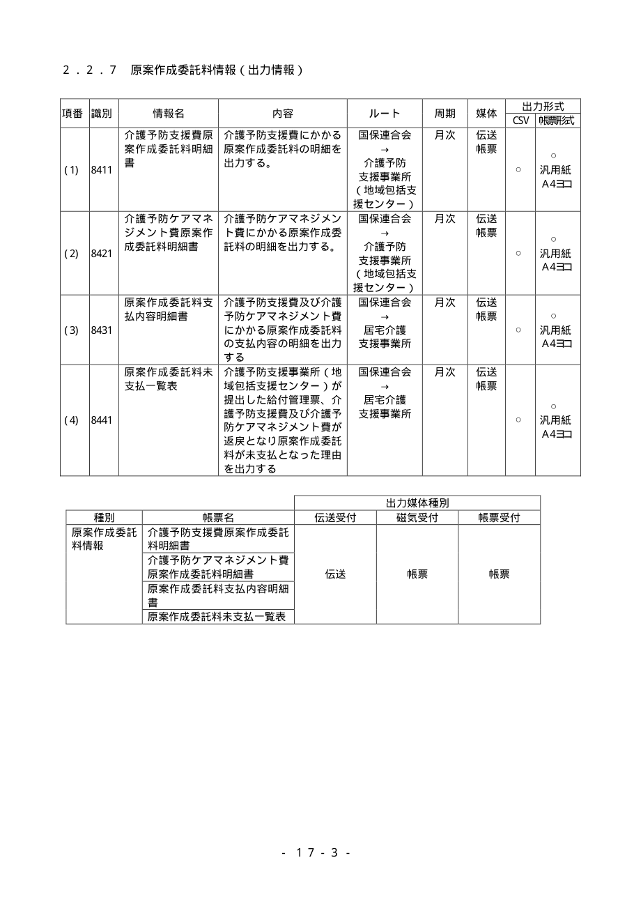
| 項番 | 項目名 | 属性 | 桁数 | 内容 | 必須 | 備考 | その他の列 |
|---|---|---|---|---|---|---|---|
| (1) | 介護予防支援費原案作成委託料明細書 | 介護予防支援費にかかる原案作成委託料の明細を出力する。 | 識別: 8411 ルート: 国保連合会→介護予防支援事業所（地域包括支援センター） 周期: 月次 媒体: 伝送 帳票 出力形式 > CSV: ○ 出力形式 > 帳票形式: ○ 汎用紙 A4ヨコ | ||||
| (2) | 介護予防ケアマネジメント費原案作成委託料明細書 | 介護予防ケアマネジメント費にかかる原案作成委託料の明細を出力する。 | 識別: 8421 ルート: 国保連合会→介護予防支援事業所（地域包括支援センター） 周期: 月次 媒体: 伝送 帳票 出力形式 > CSV: ○ 出力形式 > 帳票形式: ○ 汎用紙 A4ヨコ | ||||
| (3) | 原案作成委託料支払内容明細書 | 介護予防支援費及び介護予防ケアマネジメント費にかかる原案作成委託料の支払内容の明細を出力する | 識別: 8431 ルート: 国保連合会→居宅介護支援事業所 周期: 月次 媒体: 伝送 帳票 出力形式 > CSV: ○ 出力形式 > 帳票形式: ○ 汎用紙 A4ヨコ | ||||
| (4) | 原案作成委託料未支払一覧表 | 介護予防支援事業所（地域包括支援センター）が提出した給付管理票、介護予防支援費及び介護予防ケアマネジメント費が返戻となり原案作成委託料が未支払となった理由を出力する | 識別: 8441 ルート: 国保連合会→居宅介護支援事業所 周期: 月次 媒体: 伝送 帳票 出力形式 > CSV: ○ 出力形式 > 帳票形式: ○ 汎用紙 A4ヨコ |
| 項番 | 項目名 | 属性 | 桁数 | 内容 | 必須 | 備考 | その他の列 |
|---|---|---|---|---|---|---|---|
| 介護予防支援費原案作成委託料明細書 | 種別: 原案作成委託料情報 出力媒体種別 > 伝送受付: 伝送 出力媒体種別 > 磁気受付: 帳票 出力媒体種別 > 帳票受付: 帳票 | ||||||
| 介護予防ケアマネジメント費原案作成委託料明細書 | 種別: 原案作成委託料情報 出力媒体種別 > 伝送受付: 伝送 出力媒体種別 > 磁気受付: 帳票 出力媒体種別 > 帳票受付: 帳票 | ||||||
| 原案作成委託料支払内容明細書 | 種別: 原案作成委託料情報 出力媒体種別 > 伝送受付: 伝送 出力媒体種別 > 磁気受付: 帳票 出力媒体種別 > 帳票受付: 帳票 | ||||||
| 原案作成委託料未支払一覧表 | 種別: 原案作成委託料情報 出力媒体種別 > 伝送受付: 伝送 出力媒体種別 > 磁気受付: 帳票 出力媒体種別 > 帳票受付: 帳票 |
| 項番 | 項目名 | 属性 | 桁数 | 内容 | 必須 | 備考 | その他の列 |
|---|---|---|---|---|---|---|---|
| (1) | 介護予防支援費原案作成委託料明細書 | 介護予防支援費にかかる原案作成委託料の明細を出力する。 | 識別: 8411 ルート: 国保連合会 → 介護予防支援事業所(地域包括支援センター) 周期: 月次 媒体: 伝送 帳票 出力形式 > CSV: ○ 出力形式 > 帳票形式: ○ 汎用紙 A4ヨコ | ||||
| (2) | 介護予防ケアマネジメント費原案作成委託料明細書 | 介護予防ケアマネジメント費にかかる原案作成委託料の明細を出力する。 | 識別: 8421 ルート: 国保連合会 → 介護予防支援事業所(地域包括支援センター) 周期: 月次 媒体: 伝送 帳票 出力形式 > CSV: ○ 出力形式 > 帳票形式: ○ 汎用紙 A4ヨコ | ||||
| (3) | 原案作成委託料支払内容明細書 | 介護予防支援費及び介護予防ケアマネジメント費にかかる原案作成委託料の支払内容の明細を出力する | 識別: 8431 ルート: 国保連合会 → 居宅介護支援事業所 周期: 月次 媒体: 伝送 帳票 出力形式 > CSV: ○ 出力形式 > 帳票形式: ○ 汎用紙 A4ヨコ | ||||
| (4) | 原案作成委託料未支払一覧表 | 介護予防支援事業所(地域包括支援センター)が提出した給付管理票、介護予防支援費及び介護予防ケアマネジメント費が返戻となり原案作成委託料が未支払となった理由を出力する | 識別: 8441 ルート: 国保連合会 → 居宅介護支援事業所 周期: 月次 媒体: 伝送 帳票 出力形式 > CSV: ○ 出力形式 > 帳票形式: ○ 汎用紙 A4ヨコ |
| 項番 | 項目名 | 属性 | 桁数 | 内容 | 必須 | 備考 | その他の列 |
|---|---|---|---|---|---|---|---|
| 介護予防支援費原案作成委託料明細書 | 種別: 原案作成委託料情報 出力媒体種別 > 伝送受付: 伝送 出力媒体種別 > 磁気受付: 帳票 出力媒体種別 > 帳票受付: 帳票 | ||||||
| 介護予防ケアマネジメント費原案作成委託料明細書 | 種別: 原案作成委託料情報 出力媒体種別 > 伝送受付: 伝送 出力媒体種別 > 磁気受付: 帳票 出力媒体種別 > 帳票受付: 帳票 | ||||||
| 原案作成委託料支払内容明細書 | 種別: 原案作成委託料情報 出力媒体種別 > 伝送受付: 伝送 出力媒体種別 > 磁気受付: 帳票 出力媒体種別 > 帳票受付: 帳票 | ||||||
| 原案作成委託料未支払一覧表 | 種別: 原案作成委託料情報 出力媒体種別 > 伝送受付: 伝送 出力媒体種別 > 磁気受付: 帳票 出力媒体種別 > 帳票受付: 帳票 |
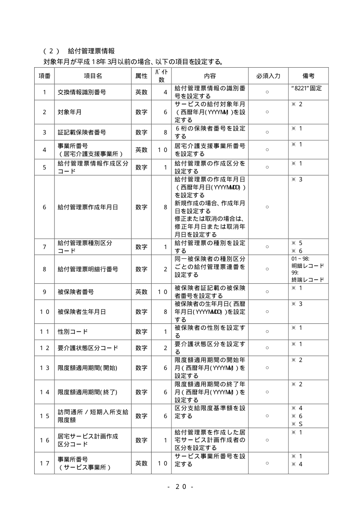
| 項番 | 項目名 | 属性 | 桁数 | 内容 | 必須 | 備考 | その他の列 |
|---|---|---|---|---|---|---|---|
| 1 | 交換情報識別番号 | 英数 | 4 | 給付管理票情報の識別番号を設定する | ○ | "8221"固定 | |
| 2 | 対象年月 | 数字 | 6 | サービスの給付対象年月（西暦年月(YYYYMM)）を設定する | ○ | ※ 2 | |
| 3 | 証記載保険者番号 | 数字 | 8 | 6桁の保険者番号を設定する | ○ | ※ 1 | |
| 4 | 事業所番号（居宅介護支援事業所） | 英数 | 10 | 居宅介護支援事業所番号を設定する | ○ | ※ 1 | |
| 5 | 給付管理票情報作成区分コード | 数字 | 1 | 給付管理票の作成区分を設定する | ○ | ※ 1 | |
| 6 | 給付管理票作成年月日 | 数字 | 8 | 給付管理票の作成年月日（西暦年月日(YYYYMMDD)）を設定する 新規作成の場合、作成年月日を設定する 修正または取消の場合は、修正年月日または取消年月日を設定する | ○ | ※ 3 | |
| 7 | 給付管理票種別区分コード | 数字 | 1 | 給付管理票の種別を設定する | ○ | ※ 5 ※ 6 | |
| 8 | 給付管理票明細行番号 | 数字 | 2 | 同一被保険者の種別区分ごとの給付管理票連番を設定する | ○ | 01～98: 明細レコード 99: 終端レコード | |
| 9 | 被保険者番号 | 英数 | 10 | 被保険者証記載の被保険者番号を設定する | ○ | ※ 1 | |
| 10 | 被保険者生年月日 | 数字 | 8 | 被保険者の生年月日(西暦年月日(YYYYMMDD))を設定する | ○ | ※ 3 | |
| 11 | 性別コード | 数字 | 1 | 被保険者の性別を設定する | ○ | ※ 1 | |
| 12 | 要介護状態区分コード | 数字 | 2 | 要介護状態区分を設定する | ○ | ※ 1 | |
| 13 | 限度額適用期間(開始) | 数字 | 6 | 限度額適用期間の開始年月（西暦年月(YYYYMM)）を設定する | ○ | ※ 2 | |
| 14 | 限度額適用期間(終了) | 数字 | 6 | 限度額適用期間の終了年月（西暦年月(YYYYMM)）を設定する | ○ | ※ 2 | |
| 15 | 訪問通所／短期入所支給限度額 | 数字 | 6 | 区分支給限度基準額を設定する | ○ | ※ 4 ※ 6 ※ S | |
| 16 | 居宅サービス計画作成区分コード | 数字 | 1 | 給付管理票を作成した居宅サービス計画作成者の区分を設定する | ○ | ※ 1 | |
| 17 | 事業所番号（サービス事業所） | 英数 | 10 | サービス事業所番号を設定する | ○ | ※ 1 ※ 4 |
| 項番 | 項目名 | 属性 | 桁数 | 内容 | 必須 | 備考 | その他の列 |
|---|---|---|---|---|---|---|---|
| 1 | 交換情報識別番号 | 英数 | 4 | 給付管理票情報の識別番号を設定する | ○ | “8221”固定 | |
| 2 | 対象年月 | 数字 | 6 | サービスの給付対象年月（西暦年月(YYYYMM)）を設定する | ○ | ※2 | |
| 3 | 証記載保険者番号 | 数字 | 8 | 6桁の保険者番号を設定する | ○ | ※1 | |
| 4 | 事業所番号（居宅介護支援事業所） | 英数 | 10 | 居宅介護支援事業所番号を設定する | ○ | ※1 | |
| 5 | 給付管理票情報作成区分コード | 数字 | 1 | 給付管理票の作成区分を設定する | ○ | ※1 | |
| 6 | 給付管理票作成年月日 | 数字 | 8 | 給付管理票の作成年月日（西暦年月日(YYYYMMDD)）を設定する 新規作成の場合、作成年月日を設定する 修正または取消の場合は、修正年月日または取消年月日を設定する | ○ | ※3 | |
| 7 | 給付管理票種別区分コード | 数字 | 1 | 給付管理票の種別を設定する | ○ | ※5 ※6 | |
| 8 | 給付管理票明細行番号 | 数字 | 2 | 同一被保険者の種別区分ごとの給付管理票連番を設定する | ○ | 01～98:明細レコード 99:終端レコード | |
| 9 | 被保険者番号 | 英数 | 10 | 被保険者証記載の被保険者番号を設定する | ○ | ※1 | |
| １０ | 被保険者生年月日 | 数字 | 8 | 被保険者の生年月日(西暦年月日(YYYYMMDD))を設定する | ○ | ※3 | |
| １１ | 性別コード | 数字 | 1 | 被保険者の性別を設定する | ○ | ※1 | |
| １２ | 要介護状態区分コード | 数字 | 2 | 要介護状態区分を設定する | ○ | ※1 | |
| １３ | 限度額適用期間(開始) | 数字 | 6 | 限度額適用期間の開始年月(西暦年月(YYYYMM))を設定する | ○ | ※2 | |
| １４ | 限度額適用期間(終了) | 数字 | 6 | 限度額適用期間の終了年月(西暦年月(YYYYMM))を設定する | ○ | ※2 | |
| １５ | 訪問通所／短期入所支給限度額 | 数字 | 6 | 区分支給限度基準額を設定する | ○ | ※4 ※6 ※S | |
| １６ | 居宅サービス計画作成区分コード | 数字 | 1 | 給付管理票を作成した居宅サービス計画作成者の区分を設定する | ○ | ※1 | |
| １７ | 事業所番号（サービス事業所） | 英数 | 10 | サービス事業所番号を設定する | ○ | ※1 ※4 |
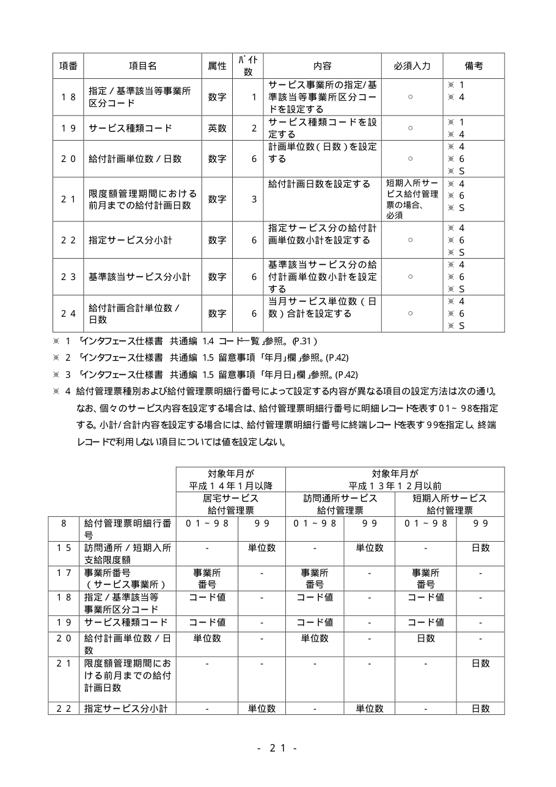
| 項番 | 項目名 | 属性 | 桁数 | 内容 | 必須 | 備考 | その他の列 |
|---|---|---|---|---|---|---|---|
| １８ | 指定/基準該当等事業所区分コード | 数字 | 1 | サービス事業所の指定/基準該当等事業所区分コードを設定する | ○ | ※ 1 ※ 4 | |
| １９ | サービス種類コード | 英数 | 2 | サービス種類コードを設定する | ○ | ※ 1 ※ 4 | |
| ２０ | 給付計画単位数 / 日数 | 数字 | 6 | 計画単位数(日数)を設定する | ○ | ※ 4 ※ 6 ※ S | |
| ２１ | 限度額管理期間における前月までの給付計画日数 | 数字 | 3 | 給付計画日数を設定する | 短期入所サービス給付管理票の場合、 必須 | ※ 4 ※ 6 ※ S | |
| ２２ | 指定サービス分小計 | 数字 | 6 | 指定サービス分の給付計画単位数小計を設定する | ○ | ※ 4 ※ 6 ※ S | |
| ２３ | 基準該当サービス分小計 | 数字 | 6 | 基準該当サービス分の給付計画単位数小計を設定する | ○ | ※ 4 ※ 6 ※ S | |
| ２４ | 給付計画合計単位数 / 日数 | 数字 | 6 | 当月サービス単位数(日数)合計を設定する | ○ | ※ 4 ※ 6 ※ S |
| 項番 | 項目名 | 属性 | 桁数 | 内容 | 必須 | 備考 | その他の列 |
|---|---|---|---|---|---|---|---|
| 8 | 給付管理票明細行番号 | 対象年月が平成14年1月以降 > 居宅サービス給付管理票 > 1列目: 01～98 対象年月が平成14年1月以降 > 居宅サービス給付管理票 > 2列目: 99 対象年月が平成13年12月以前 > 訪問通所サービス給付管理票 > 1列目: 01～98 対象年月が平成13年12月以前 > 訪問通所サービス給付管理票 > 2列目: 99 対象年月が平成13年12月以前 > 短期入所サービス給付管理票 > 1列目: 01～98 対象年月が平成13年12月以前 > 短期入所サービス給付管理票 > 2列目: 99 | |||||
| 15 | 訪問通所 / 短期入所支給限度額 | 対象年月が平成14年1月以降 > 居宅サービス給付管理票 > 1列目: - 対象年月が平成14年1月以降 > 居宅サービス給付管理票 > 2列目: 単位数 対象年月が平成13年12月以前 > 訪問通所サービス給付管理票 > 1列目: - 対象年月が平成13年12月以前 > 訪問通所サービス給付管理票 > 2列目: 単位数 対象年月が平成13年12月以前 > 短期入所サービス給付管理票 > 1列目: - 対象年月が平成13年12月以前 > 短期入所サービス給付管理票 > 2列目: 日数 | |||||
| 17 | 事業所番号（サービス事業所） | 対象年月が平成14年1月以降 > 居宅サービス給付管理票 > 1列目: 事業所番号 対象年月が平成14年1月以降 > 居宅サービス給付管理票 > 2列目: - 対象年月が平成13年12月以前 > 訪問通所サービス給付管理票 > 1列目: 事業所番号 対象年月が平成13年12月以前 > 訪問通所サービス給付管理票 > 2列目: - 対象年月が平成13年12月以前 > 短期入所サービス給付管理票 > 1列目: 事業所番号 対象年月が平成13年12月以前 > 短期入所サービス給付管理票 > 2列目: - | |||||
| 18 | 指定 / 基準該当等事業所区分コード | 対象年月が平成14年1月以降 > 居宅サービス給付管理票 > 1列目: コード値 対象年月が平成14年1月以降 > 居宅サービス給付管理票 > 2列目: - 対象年月が平成13年12月以前 > 訪問通所サービス給付管理票 > 1列目: コード値 対象年月が平成13年12月以前 > 訪問通所サービス給付管理票 > 2列目: - 対象年月が平成13年12月以前 > 短期入所サービス給付管理票 > 1列目: コード値 対象年月が平成13年12月以前 > 短期入所サービス給付管理票 > 2列目: - | |||||
| 19 | サービス種類コード | 対象年月が平成14年1月以降 > 居宅サービス給付管理票 > 1列目: コード値 対象年月が平成14年1月以降 > 居宅サービス給付管理票 > 2列目: - 対象年月が平成13年12月以前 > 訪問通所サービス給付管理票 > 1列目: コード値 対象年月が平成13年12月以前 > 訪問通所サービス給付管理票 > 2列目: - 対象年月が平成13年12月以前 > 短期入所サービス給付管理票 > 1列目: コード値 対象年月が平成13年12月以前 > 短期入所サービス給付管理票 > 2列目: - | |||||
| 20 | 給付計画単位数 / 日数 | 対象年月が平成14年1月以降 > 居宅サービス給付管理票 > 1列目: 単位数 対象年月が平成14年1月以降 > 居宅サービス給付管理票 > 2列目: - 対象年月が平成13年12月以前 > 訪問通所サービス給付管理票 > 1列目: 単位数 対象年月が平成13年12月以前 > 訪問通所サービス給付管理票 > 2列目: - 対象年月が平成13年12月以前 > 短期入所サービス給付管理票 > 1列目: 日数 対象年月が平成13年12月以前 > 短期入所サービス給付管理票 > 2列目: - | |||||
| 21 | 限度額管理期間における前月までの給付計画日数 | 対象年月が平成14年1月以降 > 居宅サービス給付管理票 > 1列目: - 対象年月が平成14年1月以降 > 居宅サービス給付管理票 > 2列目: - 対象年月が平成13年12月以前 > 訪問通所サービス給付管理票 > 1列目: - 対象年月が平成13年12月以前 > 訪問通所サービス給付管理票 > 2列目: - 対象年月が平成13年12月以前 > 短期入所サービス給付管理票 > 1列目: - 対象年月が平成13年12月以前 > 短期入所サービス給付管理票 > 2列目: 日数 | |||||
| 22 | 指定サービス分小計 | 対象年月が平成14年1月以降 > 居宅サービス給付管理票 > 1列目: - 対象年月が平成14年1月以降 > 居宅サービス給付管理票 > 2列目: 単位数 対象年月が平成13年12月以前 > 訪問通所サービス給付管理票 > 1列目: - 対象年月が平成13年12月以前 > 訪問通所サービス給付管理票 > 2列目: 単位数 対象年月が平成13年12月以前 > 短期入所サービス給付管理票 > 1列目: - 対象年月が平成13年12月以前 > 短期入所サービス給付管理票 > 2列目: 日数 |
| 項番 | 項目名 | 属性 | 桁数 | 内容 | 必須 | 備考 | その他の列 |
|---|---|---|---|---|---|---|---|
| 18 | 指定/基準該当等事業所区分コード | 数字 | 1 | サービス事業所の指定/基準該当等事業所区分コードを設定する | ○ | ※1 ※4 | |
| 19 | サービス種類コード | 英数 | 2 | サービス種類コードを設定する | ○ | ※1 ※4 | |
| 20 | 給付計画単位数/日数 | 数字 | 6 | 計画単位数(日数)を設定する | ○ | ※4 ※6 ※S | |
| 21 | 限度額管理期間における前月までの給付計画日数 | 数字 | 3 | 給付計画日数を設定する | 短期入所サービス給付管理票の場合、必須 | ※4 ※6 ※S | |
| 22 | 指定サービス分小計 | 数字 | 6 | 指定サービス分の給付計画単位数小計を設定する | ○ | ※4 ※6 ※S | |
| 23 | 基準該当サービス分小計 | 数字 | 6 | 基準該当サービス分の給付計画単位数小計を設定する | ○ | ※4 ※6 ※S | |
| 24 | 給付計画合計単位数/日数 | 数字 | 6 | 当月サービス単位数(日数)合計を設定する | ○ | ※4 ※6 ※S |
| 項番 | 項目名 | 属性 | 桁数 | 内容 | 必須 | 備考 | その他の列 |
|---|---|---|---|---|---|---|---|
| 8 | 給付管理票明細行番号 | 対象年月が平成14年1月以降 > 居宅サービス給付管理票 > 01～98: 01～98 対象年月が平成14年1月以降 > 居宅サービス給付管理票 > 99: 99 対象年月が平成13年12月以前 > 訪問通所サービス給付管理票 > 01～98: 01～98 対象年月が平成13年12月以前 > 訪問通所サービス給付管理票 > 99: 99 対象年月が平成13年12月以前 > 短期入所サービス給付管理票 > 01～98: 01～98 対象年月が平成13年12月以前 > 短期入所サービス給付管理票 > 99: 99 | |||||
| 15 | 訪問通所/短期入所支給限度額 | 対象年月が平成14年1月以降 > 居宅サービス給付管理票 > 01～98: - 対象年月が平成14年1月以降 > 居宅サービス給付管理票 > 99: 単位数 対象年月が平成13年12月以前 > 訪問通所サービス給付管理票 > 01～98: - 対象年月が平成13年12月以前 > 訪問通所サービス給付管理票 > 99: 単位数 対象年月が平成13年12月以前 > 短期入所サービス給付管理票 > 01～98: - 対象年月が平成13年12月以前 > 短期入所サービス給付管理票 > 99: 日数 | |||||
| 17 | 事業所番号(サービス事業所) | 対象年月が平成14年1月以降 > 居宅サービス給付管理票 > 01～98: 事業所番号 対象年月が平成14年1月以降 > 居宅サービス給付管理票 > 99: - 対象年月が平成13年12月以前 > 訪問通所サービス給付管理票 > 01～98: 事業所番号 対象年月が平成13年12月以前 > 訪問通所サービス給付管理票 > 99: - 対象年月が平成13年12月以前 > 短期入所サービス給付管理票 > 01～98: 事業所番号 対象年月が平成13年12月以前 > 短期入所サービス給付管理票 > 99: - | |||||
| 18 | 指定/基準該当等事業所区分コード | 対象年月が平成14年1月以降 > 居宅サービス給付管理票 > 01～98: コード値 対象年月が平成14年1月以降 > 居宅サービス給付管理票 > 99: - 対象年月が平成13年12月以前 > 訪問通所サービス給付管理票 > 01～98: コード値 対象年月が平成13年12月以前 > 訪問通所サービス給付管理票 > 99: - 対象年月が平成13年12月以前 > 短期入所サービス給付管理票 > 01～98: コード値 対象年月が平成13年12月以前 > 短期入所サービス給付管理票 > 99: - | |||||
| 19 | サービス種類コード | 対象年月が平成14年1月以降 > 居宅サービス給付管理票 > 01～98: コード値 対象年月が平成14年1月以降 > 居宅サービス給付管理票 > 99: - 対象年月が平成13年12月以前 > 訪問通所サービス給付管理票 > 01～98: コード値 対象年月が平成13年12月以前 > 訪問通所サービス給付管理票 > 99: - 対象年月が平成13年12月以前 > 短期入所サービス給付管理票 > 01～98: コード値 対象年月が平成13年12月以前 > 短期入所サービス給付管理票 > 99: - | |||||
| 20 | 給付計画単位数/日数 | 対象年月が平成14年1月以降 > 居宅サービス給付管理票 > 01～98: 単位数 対象年月が平成14年1月以降 > 居宅サービス給付管理票 > 99: - 対象年月が平成13年12月以前 > 訪問通所サービス給付管理票 > 01～98: 単位数 対象年月が平成13年12月以前 > 訪問通所サービス給付管理票 > 99: - 対象年月が平成13年12月以前 > 短期入所サービス給付管理票 > 01～98: 日数 対象年月が平成13年12月以前 > 短期入所サービス給付管理票 > 99: - | |||||
| 21 | 限度額管理期間における前月までの給付計画日数 | 対象年月が平成14年1月以降 > 居宅サービス給付管理票 > 01～98: - 対象年月が平成14年1月以降 > 居宅サービス給付管理票 > 99: - 対象年月が平成13年12月以前 > 訪問通所サービス給付管理票 > 01～98: - 対象年月が平成13年12月以前 > 訪問通所サービス給付管理票 > 99: - 対象年月が平成13年12月以前 > 短期入所サービス給付管理票 > 01～98: - 対象年月が平成13年12月以前 > 短期入所サービス給付管理票 > 99: 日数 | |||||
| 22 | 指定サービス分小計 | 対象年月が平成14年1月以降 > 居宅サービス給付管理票 > 01～98: - 対象年月が平成14年1月以降 > 居宅サービス給付管理票 > 99: 単位数 対象年月が平成13年12月以前 > 訪問通所サービス給付管理票 > 01～98: - 対象年月が平成13年12月以前 > 訪問通所サービス給付管理票 > 99: 単位数 対象年月が平成13年12月以前 > 短期入所サービス給付管理票 > 01～98: - 対象年月が平成13年12月以前 > 短期入所サービス給付管理票 > 99: 日数 |
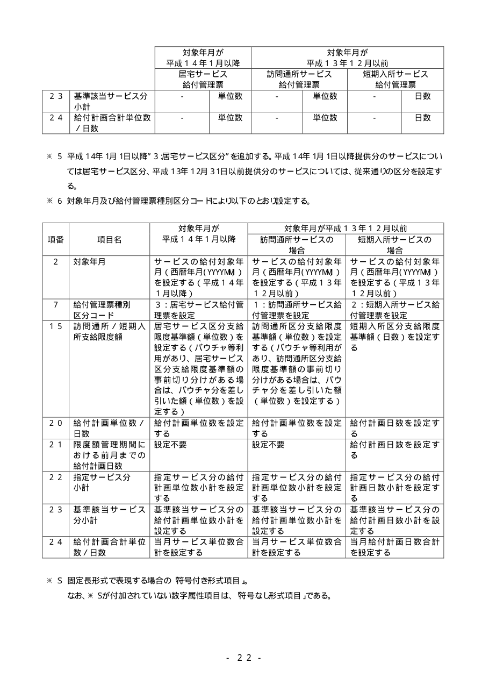
| 項番 | 項目名 | 属性 | 桁数 | 内容 | 必須 | 備考 | その他の列 |
|---|---|---|---|---|---|---|---|
| 23 | 基準該当サービス分小計 | 対象年月が平成14年1月以降 > 居宅サービス給付管理票: - 対象年月が平成14年1月以降 > 居宅サービス給付管理票: 単位数 対象年月が平成13年12月以前 > 訪問通所サービス給付管理票: - 対象年月が平成13年12月以前 > 訪問通所サービス給付管理票: 単位数 対象年月が平成13年12月以前 > 短期入所サービス給付管理票: - 対象年月が平成13年12月以前 > 短期入所サービス給付管理票: 日数 | |||||
| 24 | 給付計画合計単位数／日数 | 対象年月が平成14年1月以降 > 居宅サービス給付管理票: - 対象年月が平成14年1月以降 > 居宅サービス給付管理票: 単位数 対象年月が平成13年12月以前 > 訪問通所サービス給付管理票: - 対象年月が平成13年12月以前 > 訪問通所サービス給付管理票: 単位数 対象年月が平成13年12月以前 > 短期入所サービス給付管理票: - 対象年月が平成13年12月以前 > 短期入所サービス給付管理票: 日数 |
| 項番 | 項目名 | 属性 | 桁数 | 内容 | 必須 | 備考 | その他の列 |
|---|---|---|---|---|---|---|---|
| 2 | 対象年月 | 対象年月が平成14年1月以降: サービスの給付対象年月（西暦年月(YYYYMM)）を設定する（平成14年1月以降） 対象年月が平成13年12月以前 > 訪問通所サービスの場合: サービスの給付対象年月（西暦年月(YYYYMM)）を設定する（平成13年12月以前） 対象年月が平成13年12月以前 > 短期入所サービスの場合: サービスの給付対象年月（西暦年月(YYYYMM)）を設定する（平成13年12月以前） | |||||
| 7 | 給付管理票種別区分コード | 対象年月が平成14年1月以降: 3：居宅サービス給付管理票を設定 対象年月が平成13年12月以前 > 訪問通所サービスの場合: 1：訪問通所サービス給付管理票を設定 対象年月が平成13年12月以前 > 短期入所サービスの場合: 2：短期入所サービス給付管理票を設定 | |||||
| 15 | 訪問通所／短期入所支給限度額 | 対象年月が平成14年1月以降: 居宅サービス区分支給限度基準額（単位数）を設定する（バウチャ等利用があり、居宅サービス区分支給限度基準額の事前切り分けがある場合は、バウチャ分を差し引いた額（単位数）を設定する） 対象年月が平成13年12月以前 > 訪問通所サービスの場合: 訪問通所区分支給限度基準額（単位数）を設定する（バウチャ等利用があり、訪問通所区分支給限度基準額の事前切り分けがある場合は、バウチャ分を差し引いた額（単位数）を設定する） 対象年月が平成13年12月以前 > 短期入所サービスの場合: 短期入所区分支給限度基準額（日数）を設定する | |||||
| 20 | 給付計画単位数／日数 | 対象年月が平成14年1月以降: 給付計画単位数を設定する 対象年月が平成13年12月以前 > 訪問通所サービスの場合: 給付計画単位数を設定する 対象年月が平成13年12月以前 > 短期入所サービスの場合: 給付計画日数を設定する | |||||
| 21 | 限度額管理期間における前月までの給付計画日数 | 対象年月が平成14年1月以降: 設定不要 対象年月が平成13年12月以前 > 訪問通所サービスの場合: 設定不要 対象年月が平成13年12月以前 > 短期入所サービスの場合: 給付計画日数を設定する | |||||
| 22 | 指定サービス分小計 | 対象年月が平成14年1月以降: 指定サービス分の給付計画単位数小計を設定する 対象年月が平成13年12月以前 > 訪問通所サービスの場合: 指定サービス分の給付計画単位数小計を設定する 対象年月が平成13年12月以前 > 短期入所サービスの場合: 指定サービス分の給付計画日数小計を設定する | |||||
| 23 | 基準該当サービス分小計 | 対象年月が平成14年1月以降: 基準該当サービス分の給付計画単位数小計を設定する 対象年月が平成13年12月以前 > 訪問通所サービスの場合: 基準該当サービス分の給付計画単位数小計を設定する 対象年月が平成13年12月以前 > 短期入所サービスの場合: 基準該当サービス分の給付計画日数小計を設定する | |||||
| 24 | 給付計画合計単位数／日数 | 対象年月が平成14年1月以降: 当月サービス単位数合計を設定する 対象年月が平成13年12月以前 > 訪問通所サービスの場合: 当月サービス単位数合計を設定する 対象年月が平成13年12月以前 > 短期入所サービスの場合: 当月給付計画日数合計を設定する |
| 項番 | 項目名 | 属性 | 桁数 | 内容 | 必須 | 備考 | その他の列 |
|---|---|---|---|---|---|---|---|
| 23 | 基準該当サービス分小計 | 対象年月が平成14年1月以降 > 居宅サービス給付管理票 > 属性1: - 対象年月が平成14年1月以降 > 居宅サービス給付管理票 > 属性2: 単位数 対象年月が平成13年12月以前 > 訪問通所サービス給付管理票 > 属性1: - 対象年月が平成13年12月以前 > 訪問通所サービス給付管理票 > 属性2: 単位数 対象年月が平成13年12月以前 > 短期入所サービス給付管理票 > 属性1: - 対象年月が平成13年12月以前 > 短期入所サービス給付管理票 > 属性2: 日数 | |||||
| 24 | 給付計画合計単位数/日数 | 対象年月が平成14年1月以降 > 居宅サービス給付管理票 > 属性1: - 対象年月が平成14年1月以降 > 居宅サービス給付管理票 > 属性2: 単位数 対象年月が平成13年12月以前 > 訪問通所サービス給付管理票 > 属性1: - 対象年月が平成13年12月以前 > 訪問通所サービス給付管理票 > 属性2: 単位数 対象年月が平成13年12月以前 > 短期入所サービス給付管理票 > 属性1: - 対象年月が平成13年12月以前 > 短期入所サービス給付管理票 > 属性2: 日数 |
| 項番 | 項目名 | 属性 | 桁数 | 内容 | 必須 | 備考 | その他の列 |
|---|---|---|---|---|---|---|---|
| 2 | 対象年月 | 対象年月が平成14年1月以降: サービスの給付対象年月(西暦年月(YYYYMM))を設定する(平成14年1月以降) 対象年月が平成13年12月以前 > 訪問通所サービスの場合: サービスの給付対象年月(西暦年月(YYYYMM))を設定する(平成13年12月以前) 対象年月が平成13年12月以前 > 短期入所サービスの場合: サービスの給付対象年月(西暦年月(YYYYMM))を設定する(平成13年12月以前) | |||||
| 7 | 給付管理票種別区分コード | 対象年月が平成14年1月以降: 3:居宅サービス給付管理票を設定 対象年月が平成13年12月以前 > 訪問通所サービスの場合: 1:訪問通所サービス給付管理票を設定 対象年月が平成13年12月以前 > 短期入所サービスの場合: 2:短期入所サービス給付管理票を設定 | |||||
| 15 | 訪問通所/短期入所支給限度額 | 対象年月が平成14年1月以降: 居宅サービス区分支給限度基準額(単位数)を設定する(バウチャ等利用があり、居宅サービス区分支給限度基準額の事前切り分けがある場合は、バウチャ分を差し引いた額(単位数)を設定する) 対象年月が平成13年12月以前 > 訪問通所サービスの場合: 訪問通所区分支給限度基準額(単位数)を設定する(バウチャ等利用があり、訪問通所区分支給限度基準額の事前切り分けがある場合は、バウチャ分を差し引いた額(単位数)を設定する) 対象年月が平成13年12月以前 > 短期入所サービスの場合: 短期入所区分支給限度基準額(日数)を設定する | |||||
| 20 | 給付計画単位数/日数 | 対象年月が平成14年1月以降: 給付計画単位数を設定する 対象年月が平成13年12月以前 > 訪問通所サービスの場合: 給付計画単位数を設定する 対象年月が平成13年12月以前 > 短期入所サービスの場合: 給付計画日数を設定する | |||||
| 21 | 限度額管理期間における前月までの給付計画日数 | 対象年月が平成14年1月以降: 設定不要 対象年月が平成13年12月以前 > 訪問通所サービスの場合: 設定不要 対象年月が平成13年12月以前 > 短期入所サービスの場合: 給付計画日数を設定する | |||||
| 22 | 指定サービス分小計 | 対象年月が平成14年1月以降: 指定サービス分の給付計画単位数小計を設定する 対象年月が平成13年12月以前 > 訪問通所サービスの場合: 指定サービス分の給付計画単位数小計を設定する 対象年月が平成13年12月以前 > 短期入所サービスの場合: 指定サービス分の給付計画日数小計を設定する | |||||
| 23 | 基準該当サービス分小計 | 対象年月が平成14年1月以降: 基準該当サービス分の給付計画単位数小計を設定する 対象年月が平成13年12月以前 > 訪問通所サービスの場合: 基準該当サービス分の給付計画単位数小計を設定する 対象年月が平成13年12月以前 > 短期入所サービスの場合: 基準該当サービス分の給付計画日数小計を設定する | |||||
| 24 | 給付計画合計単位数/日数 | 対象年月が平成14年1月以降: 当月サービス単位数合計を設定する 対象年月が平成13年12月以前 > 訪問通所サービスの場合: 当月サービス単位数合計を設定する 対象年月が平成13年12月以前 > 短期入所サービスの場合: 当月給付計画日数合計を設定する |
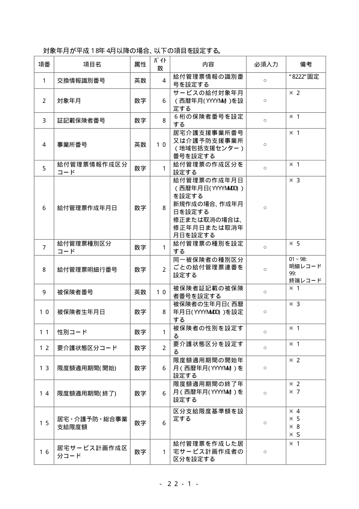
| 項番 | 項目名 | 属性 | 桁数 | 内容 | 必須 | 備考 | その他の列 |
|---|---|---|---|---|---|---|---|
| 1 | 交換情報識別番号 | 英数 | 4 | 給付管理票情報の識別番号を設定する | ○ | "8222"固定 | |
| 2 | 対象年月 | 数字 | 6 | サービスの給付対象年月(西暦年月(YYYYMM) )を設定する | ○ | ※ 2 | |
| 3 | 証記載保険者番号 | 数字 | 8 | 6桁の保険者番号を設定する | ○ | ※ 1 | |
| 4 | 事業所番号 | 英数 | 10 | 居宅介護支援事業所番号又は介護予防支援事業所(地域包括支援センター)番号を設定する | ○ | ※ 1 | |
| 5 | 給付管理票情報作成区分コード | 数字 | 1 | 給付管理票の作成区分を設定する | ○ | ※ 1 | |
| 6 | 給付管理票作成年月日 | 数字 | 8 | 給付管理票の作成年月日(西暦年月日(YYYYMMDD) )を設定する 新規作成の場合、作成年月日を設定する 修正または取消の場合は、修正年月日または取消年月日を設定する | ○ | ※ 3 | |
| 7 | 給付管理票種別区分コード | 数字 | 1 | 給付管理票の種別を設定する | ○ | ※ 5 | |
| 8 | 給付管理票明細行番号 | 数字 | 2 | 同一被保険者の種別区分ごとの給付管理票連番を設定する | ○ | 01 ~ 98:明細レコード 99:終端レコード | |
| 9 | 被保険者番号 | 英数 | 10 | 被保険者証記載の被保険者番号を設定する | ○ | ※ 1 | |
| 10 | 被保険者生年月日 | 数字 | 8 | 被保険者の生年月日(西暦年月日(YYYYMMDD) )を設定する | ○ | ※ 3 | |
| 11 | 性別コード | 数字 | 1 | 被保険者の性別を設定する | ○ | ※ 1 | |
| 12 | 要介護状態区分コード | 数字 | 2 | 要介護状態区分を設定する | ○ | ※ 1 | |
| 13 | 限度額適用期間(開始) | 数字 | 6 | 限度額適用期間の開始年月(西暦年月(YYYYMM) )を設定する | ○ | ※ 2 | |
| 14 | 限度額適用期間(終了) | 数字 | 6 | 限度額適用期間の終了年月(西暦年月(YYYYMM) )を設定する | ○ | ※ 2 ※ 7 | |
| 15 | 居宅・介護予防・総合事業支給限度額 | 数字 | 6 | 区分支給限度基準額を設定する | ○ | ※ 4 ※ 5 ※ 8 ※ S | |
| 16 | 居宅サービス計画作成区分コード | 数字 | 1 | 給付管理票を作成した居宅サービス計画作成者の区分を設定する | ○ | ※ 1 |
| 項番 | 項目名 | 属性 | 桁数 | 内容 | 必須 | 備考 | その他の列 |
|---|---|---|---|---|---|---|---|
| 1 | 交換情報識別番号 | 英数 | 4 | 給付管理票情報の識別番号を設定する | ○ | “8222”固定 | |
| 2 | 対象年月 | 数字 | 6 | サービスの給付対象年月（西暦年月(YYYYMM)）を設定する | ○ | ※2 | |
| 3 | 証記載保険者番号 | 数字 | 8 | ６桁の保険者番号を設定する | ○ | ※1 | |
| 4 | 事業所番号 | 英数 | 10 | 居宅介護支援事業所番号又は介護予防支援事業所（地域包括支援センター）番号を設定する | ○ | ※1 | |
| 5 | 給付管理票情報作成区分コード | 数字 | 1 | 給付管理票の作成区分を設定する | ○ | ※1 | |
| 6 | 給付管理票作成年月日 | 数字 | 8 | 給付管理票の作成年月日（西暦年月日(YYYYMMDD)）を設定する 新規作成の場合、作成年月日を設定する 修正または取消の場合は、修正年月日または取消年月日を設定する | ○ | ※3 | |
| 7 | 給付管理票種別区分コード | 数字 | 1 | 給付管理票の種別を設定する | ○ | ※5 | |
| 8 | 給付管理票明細行番号 | 数字 | 2 | 同一被保険者の種別区分ごとの給付管理票連番を設定する | ○ | 01～98: 明細レコード 99: 終端レコード | |
| 9 | 被保険者番号 | 英数 | 10 | 被保険者証記載の被保険者番号を設定する | ○ | ※1 | |
| １０ | 被保険者生年月日 | 数字 | 8 | 被保険者の生年月日(西暦年月日(YYYYMMDD))を設定する | ○ | ※3 | |
| １１ | 性別コード | 数字 | 1 | 被保険者の性別を設定する | ○ | ※1 | |
| １２ | 要介護状態区分コード | 数字 | 2 | 要介護状態区分を設定する | ○ | ※1 | |
| １３ | 限度額適用期間(開始) | 数字 | 6 | 限度額適用期間の開始年月（西暦年月(YYYYMM)）を設定する | ○ | ※2 | |
| １４ | 限度額適用期間(終了) | 数字 | 6 | 限度額適用期間の終了年月（西暦年月(YYYYMM)）を設定する | ○ | ※2 ※7 | |
| １５ | 居宅・介護予防・総合事業支給限度額 | 数字 | 6 | 区分支給限度基準額を設定する | ○ | ※4 ※5 ※8 ※S | |
| １６ | 居宅サービス計画作成区分コード | 数字 | 1 | 給付管理票を作成した居宅サービス計画作成者の区分を設定する | ○ | ※1 |
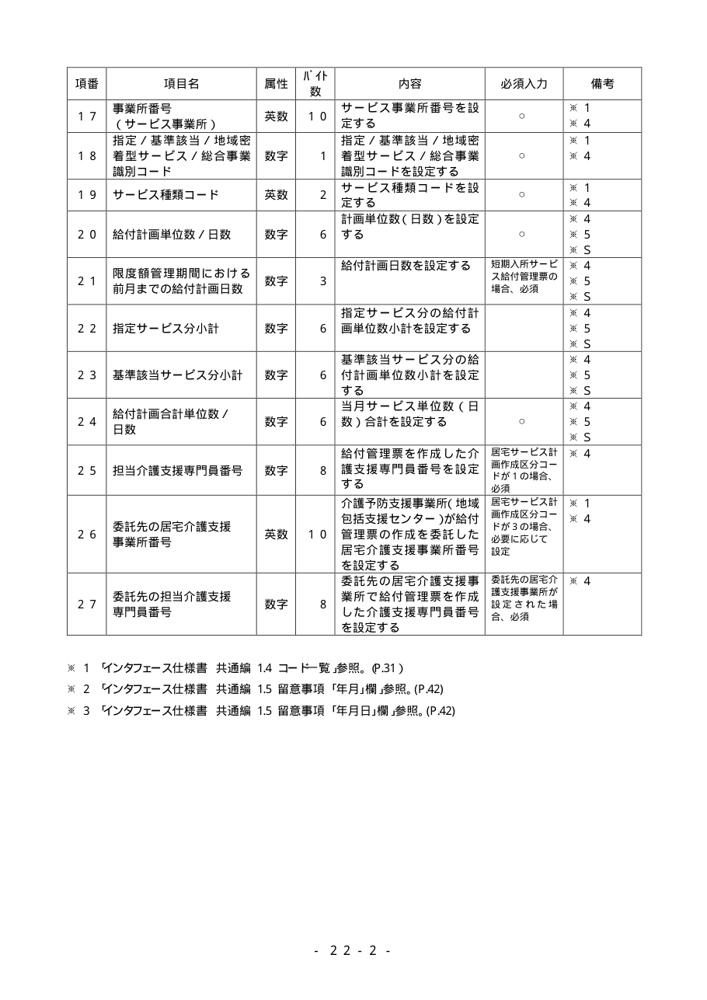
| 項番 | 項目名 | 属性 | 桁数 | 内容 | 必須 | 備考 | その他の列 |
|---|---|---|---|---|---|---|---|
| 17 | 事業所番号（サービス事業所） | 英数 | 10 | サービス事業所番号を設定する | ○ | ※ 1 ※ 4 | |
| 18 | 指定 / 基準該当 / 地域密着型サービス / 総合事業識別コード | 数字 | 1 | 指定 / 基準該当 / 地域密着型サービス / 総合事業識別コードを設定する | ○ | ※ 1 ※ 4 | |
| 19 | サービス種類コード | 英数 | 2 | サービス種類コードを設定する | ○ | ※ 1 ※ 4 | |
| 20 | 給付計画単位数 / 日数 | 数字 | 6 | 計画単位数(日数)を設定する | ○ | ※ 4 ※ 5 ※ S | |
| 21 | 限度額管理期間における前月までの給付計画日数 | 数字 | 3 | 給付計画日数を設定する | 短期入所サービス給付管理票の場合、必須 | ※ 4 ※ 5 ※ S | |
| 22 | 指定サービス分小計 | 数字 | 6 | 指定サービス分の給付計画単位数小計を設定する | ※ 4 ※ 5 ※ S | ||
| 23 | 基準該当サービス分小計 | 数字 | 6 | 基準該当サービス分の給付計画単位数小計を設定する | ※ 4 ※ 5 ※ S | ||
| 24 | 給付計画合計単位数 / 日数 | 数字 | 6 | 当月サービス単位数(日数)合計を設定する | ○ | ※ 4 ※ 5 ※ S | |
| 25 | 担当介護支援専門員番号 | 数字 | 8 | 給付管理票を作成した介護支援専門員番号を設定する | 居宅サービス計画作成区分コードが1の場合、必須 | ※ 4 | |
| 26 | 委託先の居宅介護支援事業所番号 | 英数 | 10 | 介護予防支援事業所(地域包括支援センター)が給付管理票の作成を委託した居宅介護支援事業所番号を設定する | 居宅サービス計画作成区分コードが3の場合、必要に応じて設定 | ※ 1 ※ 4 | |
| 27 | 委託先の担当介護支援専門員番号 | 数字 | 8 | 委託先の居宅介護支援事業所で給付管理票を作成した介護支援専門員番号を設定する | 委託先の居宅介護支援事業所が設定された場合、必須 | ※ 4 |
| 項番 | 項目名 | 属性 | 桁数 | 内容 | 必須 | 備考 | その他の列 |
|---|---|---|---|---|---|---|---|
| 17 | 事業所番号（サービス事業所） | 英数 | 10 | サービス事業所番号を設定する | ○ | ※1 ※4 | |
| 18 | 指定/基準該当/地域密着型サービス/総合事業識別コード | 数字 | 1 | 指定/基準該当/地域密着型サービス/総合事業識別コードを設定する | ○ | ※1 ※4 | |
| 19 | サービス種類コード | 英数 | 2 | サービス種類コードを設定する | ○ | ※1 ※4 | |
| 20 | 給付計画単位数/日数 | 数字 | 6 | 計画単位数(日数)を設定する | ○ | ※4 ※5 ※S | |
| 21 | 限度額管理期間における前月までの給付計画日数 | 数字 | 3 | 給付計画日数を設定する | 短期入所サービス給付管理票の場合、必須 | ※4 ※5 ※S | |
| 22 | 指定サービス分小計 | 数字 | 6 | 指定サービス分の給付計画単位数小計を設定する | ※4 ※5 ※S | ||
| 23 | 基準該当サービス分小計 | 数字 | 6 | 基準該当サービス分の給付計画単位数小計を設定する | ※4 ※5 ※S | ||
| 24 | 給付計画合計単位数/日数 | 数字 | 6 | 当月サービス単位数(日数)合計を設定する | ○ | ※4 ※5 ※S | |
| 25 | 担当介護支援専門員番号 | 数字 | 8 | 給付管理票を作成した介護支援専門員番号を設定する | 居宅サービス計画作成区分コードが1の場合、必須 | ※4 | |
| 26 | 委託先の居宅介護支援事業所番号 | 英数 | 10 | 介護予防支援事業所(地域包括支援センター)が給付管理票の作成を委託した居宅介護支援事業所番号を設定する | 居宅サービス計画作成区分コードが3の場合、必要に応じて設定 | ※1 ※4 | |
| 27 | 委託先の担当介護支援専門員番号 | 数字 | 8 | 委託先の居宅介護支援事業所で給付管理票を作成した介護支援専門員番号を設定する | 委託先の居宅介護支援事業所が設定された場合、必須 | ※4 |
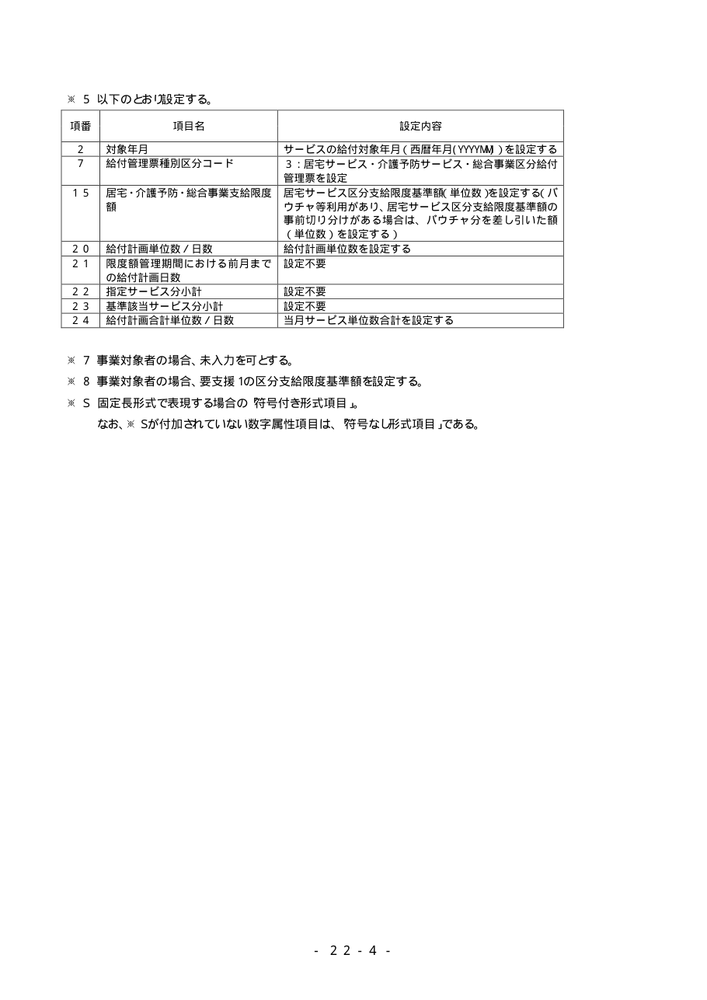
| 項番 | 項目名 | 属性 | 桁数 | 内容 | 必須 | 備考 | その他の列 |
|---|---|---|---|---|---|---|---|
| 2 | 対象年月 | サービスの給付対象年月(西暦年月(YYYYMM))を設定する | |||||
| 7 | 給付管理票種別区分コード | 3：居宅サービス・介護予防サービス・総合事業区分給付管理票を設定 | |||||
| １５ | 居宅・介護予防・総合事業支給限度額 | 居宅サービス区分支給限度基準額(単位数)を設定する(バウチャ等利用があり、居宅サービス区分支給限度基準額の事前切り分けがある場合は、バウチャ分を差し引いた額(単位数)を設定する) | |||||
| ２０ | 給付計画単位数 / 日数 | 給付計画単位数を設定する | |||||
| ２１ | 限度額管理期間における前月までの給付計画日数 | 設定不要 | |||||
| ２２ | 指定サービス分小計 | 設定不要 | |||||
| ２３ | 基準該当サービス分小計 | 設定不要 | |||||
| ２４ | 給付計画合計単位数 / 日数 | 当月サービス単位数合計を設定する |
| 項番 | 項目名 | 属性 | 桁数 | 内容 | 必須 | 備考 | その他の列 |
|---|---|---|---|---|---|---|---|
| 2 | 対象年月 | サービスの給付対象年月(西暦年月(YYYYMM))を設定する | |||||
| 7 | 給付管理票種別区分コード | 3:居宅サービス・介護予防サービス・総合事業区分給付管理票を設定 | |||||
| 15 | 居宅・介護予防・総合事業支給限度額 | 居宅サービス区分支給限度基準額(単位数)を設定する(バウチャ等利用があり、居宅サービス区分支給限度基準額の事前切り分けがある場合は、バウチャ分を差し引いた額(単位数)を設定する) | |||||
| 20 | 給付計画単位数/日数 | 給付計画単位数を設定する | |||||
| 21 | 限度額管理期間における前月までの給付計画日数 | 設定不要 | |||||
| 22 | 指定サービス分小計 | 設定不要 | |||||
| 23 | 基準該当サービス分小計 | 設定不要 | |||||
| 24 | 給付計画合計単位数/日数 | 当月サービス単位数合計を設定する |
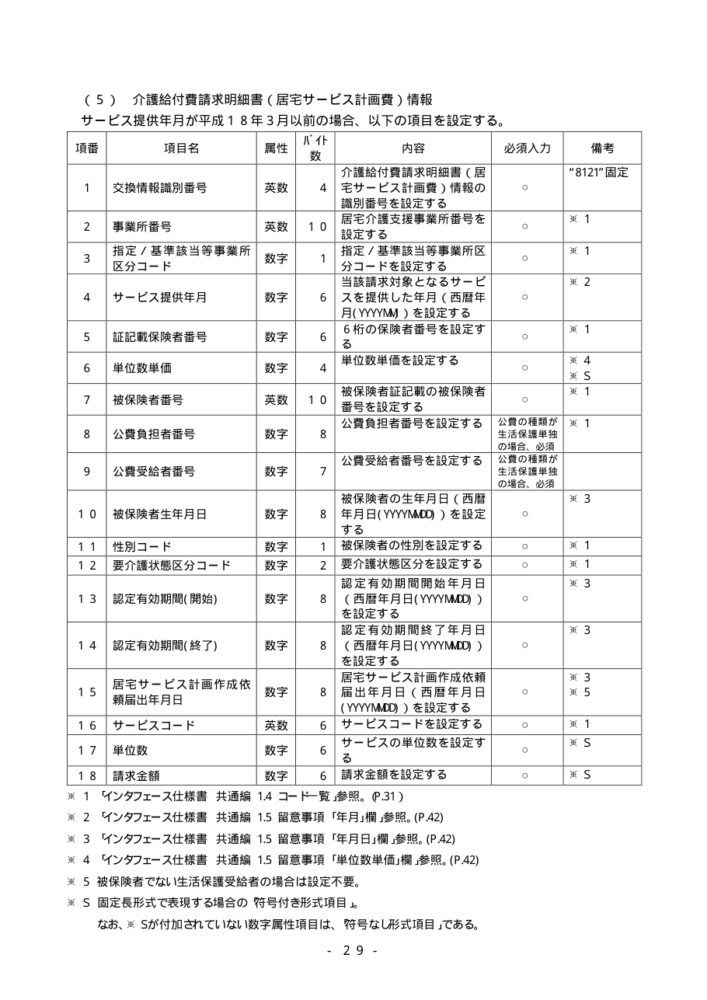
| 項番 | 項目名 | 属性 | 桁数 | 内容 | 必須 | 備考 | その他の列 |
|---|---|---|---|---|---|---|---|
| 1 | 交換情報識別番号 | 英数 | 4 | 介護給付費請求明細書（居宅サービス計画費）情報の識別番号を設定する | ○ | “8121”固定 | |
| 2 | 事業所番号 | 英数 | 10 | 居宅介護支援事業所番号を設定する | ○ | ※ 1 | |
| 3 | 指定 / 基準該当等事業所区分コード | 数字 | 1 | 指定 / 基準該当等事業所区分コードを設定する | ○ | ※ 1 | |
| 4 | サービス提供年月 | 数字 | 6 | 当該請求対象となるサービスを提供した年月（西暦年月(YYYYMM)）を設定する | ○ | ※ 2 | |
| 5 | 証記載保険者番号 | 数字 | 6 | ６桁の保険者番号を設定する | ○ | ※ 1 | |
| 6 | 単位数単価 | 数字 | 4 | 単位数単価を設定する | ○ | ※ 4 ※ S | |
| 7 | 被保険者番号 | 英数 | 10 | 被保険者証記載の被保険者番号を設定する | ○ | ※ 1 | |
| 8 | 公費負担者番号 | 数字 | 8 | 公費負担者番号を設定する | 公費の種類が生活保護単独の場合、必須 | ※ 1 | |
| 9 | 公費受給者番号 | 数字 | 7 | 公費受給者番号を設定する | 公費の種類が生活保護単独の場合、必須 | ||
| １０ | 被保険者生年月日 | 数字 | 8 | 被保険者の生年月日（西暦年月日(YYYYMMDD)）を設定する | ○ | ※ 3 | |
| １１ | 性別コード | 数字 | 1 | 被保険者の性別を設定する | ○ | ※ 1 | |
| １２ | 要介護状態区分コード | 数字 | 2 | 要介護状態区分を設定する | ○ | ※ 1 | |
| １３ | 認定有効期間(開始) | 数字 | 8 | 認定有効期間開始年月日（西暦年月日(YYYYMMDD)）を設定する | ○ | ※ 3 | |
| １４ | 認定有効期間(終了) | 数字 | 8 | 認定有効期間終了年月日（西暦年月日(YYYYMMDD)）を設定する | ○ | ※ 3 | |
| １５ | 居宅サービス計画作成依頼届出年月日 | 数字 | 8 | 居宅サービス計画作成依頼届出年月日（西暦年月日(YYYYMMDD)）を設定する | ○ | ※ 3 ※ 5 | |
| １６ | サービスコード | 英数 | 6 | サービスコードを設定する | ○ | ※ 1 | |
| １７ | 単位数 | 数字 | 6 | サービスの単位数を設定する | ○ | ※ S | |
| １８ | 請求金額 | 数字 | 6 | 請求金額を設定する | ○ | ※ S |
| 項番 | 項目名 | 属性 | 桁数 | 内容 | 必須 | 備考 | その他の列 |
|---|---|---|---|---|---|---|---|
| 1 | 交換情報識別番号 | 英数 | 4 | 介護給付費請求明細書（居宅サービス計画費）情報の識別番号を設定する | ○ | “8121”固定 | |
| 2 | 事業所番号 | 英数 | 10 | 居宅介護支援事業所番号を設定する | ○ | ※1 | |
| 3 | 指定/基準該当等事業所区分コード | 数字 | 1 | 指定/基準該当等事業所区分コードを設定する | ○ | ※1 | |
| 4 | サービス提供年月 | 数字 | 6 | 当該請求対象となるサービスを提供した年月（西暦年月(YYYYMM)）を設定する | ○ | ※2 | |
| 5 | 証記載保険者番号 | 数字 | 6 | ６桁の保険者番号を設定する | ○ | ※1 | |
| 6 | 単位数単価 | 数字 | 4 | 単位数単価を設定する | ○ | ※4 ※S | |
| 7 | 被保険者番号 | 英数 | 10 | 被保険者証記載の被保険者番号を設定する | ○ | ※1 | |
| 8 | 公費負担者番号 | 数字 | 8 | 公費負担者番号を設定する | 公費の種類が生活保護単独の場合、必須 | ※1 | |
| 9 | 公費受給者番号 | 数字 | 7 | 公費受給者番号を設定する | 公費の種類が生活保護単独の場合、必須 | ||
| 10 | 被保険者生年月日 | 数字 | 8 | 被保険者の生年月日（西暦年月日(YYYYMMDD)）を設定する | ○ | ※3 | |
| 11 | 性別コード | 数字 | 1 | 被保険者の性別を設定する | ○ | ※1 | |
| 12 | 要介護状態区分コード | 数字 | 2 | 要介護状態区分を設定する | ○ | ※1 | |
| 13 | 認定有効期間(開始) | 数字 | 8 | 認定有効期間開始年月日（西暦年月日(YYYYMMDD)）を設定する | ○ | ※3 | |
| 14 | 認定有効期間(終了) | 数字 | 8 | 認定有効期間終了年月日（西暦年月日(YYYYMMDD)）を設定する | ○ | ※3 | |
| 15 | 居宅サービス計画作成依頼届出年月日 | 数字 | 8 | 居宅サービス計画作成依頼届出年月日（西暦年月日(YYYYMMDD)）を設定する | ○ | ※3 ※5 | |
| 16 | サービスコード | 英数 | 6 | サービスコードを設定する | ○ | ※1 | |
| 17 | 単位数 | 数字 | 6 | サービスの単位数を設定する | ○ | ※S | |
| 18 | 請求金額 | 数字 | 6 | 請求金額を設定する | ○ | ※S |
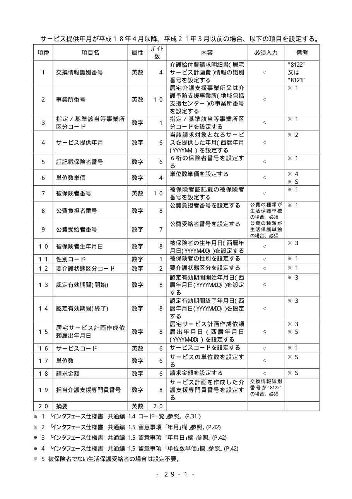
| 項番 | 項目名 | 属性 | 桁数 | 内容 | 必須 | 備考 | その他の列 |
|---|---|---|---|---|---|---|---|
| 1 | 交換情報識別番号 | 英数 | 4 | 介護給付費請求明細書( 居宅サービス計画費 )情報の識別番号を設定する | ○ | “8122” 又は “8123” | |
| 2 | 事業所番号 | 英数 | 10 | 居宅介護支援事業所又は介護予防支援事業所( 地域包括支援センター )の事業所番号を設定する | ○ | ※ 1 | |
| 3 | 指定 / 基準該当等事業所区分コード | 数字 | 1 | 指定 / 基準該当等事業所区分コードを設定する | ○ | ※ 1 | |
| 4 | サービス提供年月 | 数字 | 6 | 当該請求対象となるサービスを提供した年月( 西暦年月 (YYYYMM) )を設定する | ○ | ※ 2 | |
| 5 | 証記載保険者番号 | 数字 | 6 | 6桁の保険者番号を設定する | ○ | ※ 1 | |
| 6 | 単位数単価 | 数字 | 4 | 単位数単価を設定する | ○ | ※ 4 ※ S | |
| 7 | 被保険者番号 | 英数 | 10 | 被保険者証記載の被保険者番号を設定する | ○ | ※ 1 | |
| 8 | 公費負担者番号 | 数字 | 8 | 公費負担者番号を設定する | 公費の種類が生活保護単独の場合、必須 | ※ 1 | |
| 9 | 公費受給者番号 | 数字 | 7 | 公費受給者番号を設定する | 公費の種類が生活保護単独の場合、必須 | ||
| １０ | 被保険者生年月日 | 数字 | 8 | 被保険者の生年月日( 西暦年月日( YYYYMMDD ) )を設定する | ○ | ※ 3 | |
| １１ | 性別コード | 数字 | 1 | 被保険者の性別を設定する | ○ | ※ 1 | |
| １２ | 要介護状態区分コード | 数字 | 2 | 要介護状態区分を設定する | ○ | ※ 1 | |
| １３ | 認定有効期間(開始) | 数字 | 8 | 認定有効期間開始年月日( 西暦年月日(YYYYMMDD) )を設定する | ○ | ※ 3 | |
| １４ | 認定有効期間(終了) | 数字 | 8 | 認定有効期間終了年月日( 西暦年月日(YYYYMMDD) )を設定する | ○ | ※ 3 | |
| １５ | 居宅サービス計画作成依頼届出年月日 | 数字 | 8 | 居宅サービス計画作成依頼届出年月日( 西暦年月日( YYYYMMDD ) )を設定する | ○ | ※ 3 ※ 5 | |
| １６ | サービスコード | 英数 | 6 | サービスコードを設定する | ○ | ※ 1 | |
| １７ | 単位数 | 数字 | 6 | サービスの単位数を設定する | ○ | ※ S | |
| １８ | 請求金額 | 数字 | 6 | 請求金額を設定する | ○ | ※ S | |
| １９ | 担当介護支援専門員番号 | 数字 | 8 | サービス計画を作成した介護支援専門員番号を設定する | 交換情報識別番号が“8122”の場合、必須 | ||
| ２０ | 摘要 | 英数 | 20 |
| 項番 | 項目名 | 属性 | 桁数 | 内容 | 必須 | 備考 | その他の列 |
|---|---|---|---|---|---|---|---|
| 1 | 交換情報識別番号 | 英数 | 4 | 介護給付費請求明細書(居宅サービス計画費)情報の識別番号を設定する | ○ | "8122" 又は "8123" | |
| 2 | 事業所番号 | 英数 | 10 | 居宅介護支援事業所又は介護予防支援事業所(地域包括支援センター)の事業所番号を設定する | ○ | ※1 | |
| 3 | 指定/基準該当等事業所区分コード | 数字 | 1 | 指定/基準該当等事業所区分コードを設定する | ○ | ※1 | |
| 4 | サービス提供年月 | 数字 | 6 | 当該請求対象となるサービスを提供した年月(西暦年月(YYYYMM))を設定する | ○ | ※2 | |
| 5 | 証記載保険者番号 | 数字 | 6 | ６桁の保険者番号を設定する | ○ | ※1 | |
| 6 | 単位数単価 | 数字 | 4 | 単位数単価を設定する | ○ | ※4 ※S | |
| 7 | 被保険者番号 | 英数 | 10 | 被保険者証記載の被保険者番号を設定する | ○ | ※1 | |
| 8 | 公費負担者番号 | 数字 | 8 | 公費負担者番号を設定する | 公費の種類が生活保護単独の場合、必須 | ※1 | |
| 9 | 公費受給者番号 | 数字 | 7 | 公費受給者番号を設定する | 公費の種類が生活保護単独の場合、必須 | ||
| １０ | 被保険者生年月日 | 数字 | 8 | 被保険者の生年月日(西暦年月日(YYYYMMDD))を設定する | ○ | ※3 | |
| １１ | 性別コード | 数字 | 1 | 被保険者の性別を設定する | ○ | ※1 | |
| １２ | 要介護状態区分コード | 数字 | 2 | 要介護状態区分を設定する | ○ | ※1 | |
| １３ | 認定有効期間(開始) | 数字 | 8 | 認定有効期間開始年月日(西暦年月日(YYYYMMDD))を設定する | ○ | ※3 | |
| １４ | 認定有効期間(終了) | 数字 | 8 | 認定有効期間終了年月日(西暦年月日(YYYYMMDD))を設定する | ○ | ※3 | |
| １５ | 居宅サービス計画作成依頼届出年月日 | 数字 | 8 | 居宅サービス計画作成依頼届出年月日(西暦年月日(YYYYMMDD))を設定する | ○ | ※3 ※5 | |
| １６ | サービスコード | 英数 | 6 | サービスコードを設定する | ○ | ※1 | |
| １７ | 単位数 | 数字 | 6 | サービスの単位数を設定する | ○ | ※S | |
| １８ | 請求金額 | 数字 | 6 | 請求金額を設定する | ○ | ※S | |
| １９ | 担当介護支援専門員番号 | 数字 | 8 | サービス計画を作成した介護支援専門員番号を設定する | 交換情報識別番号が"8122"の場合、必須 | ||
| ２０ | 摘要 | 英数 | 20 |
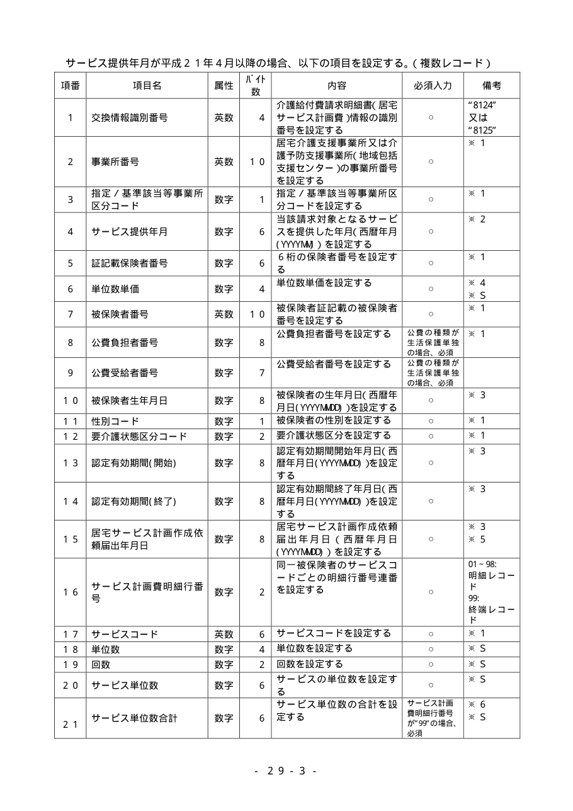
| 項番 | 項目名 | 属性 | 桁数 | 内容 | 必須 | 備考 | その他の列 |
|---|---|---|---|---|---|---|---|
| 1 | 交換情報識別番号 | 英数 | 4 | 介護給付費請求明細書(居宅サービス計画費)情報の識別番号を設定する | ○ | “8124”又は“8125” | |
| 2 | 事業所番号 | 英数 | 10 | 居宅介護支援事業所又は介護予防支援事業所(地域包括支援センター)の事業所番号を設定する | ○ | ※ 1 | |
| 3 | 指定 / 基準該当等事業所区分コード | 数字 | 1 | 指定 / 基準該当等事業所区分コードを設定する | ○ | ※ 1 | |
| 4 | サービス提供年月 | 数字 | 6 | 当該請求対象となるサービスを提供した年月(西暦年月(YYYYMM))を設定する | ○ | ※ 2 | |
| 5 | 証記載保険者番号 | 数字 | 6 | 6桁の保険者番号を設定する | ○ | ※ 1 | |
| 6 | 単位数単価 | 数字 | 4 | 単位数単価を設定する | ○ | ※ 4 ※ S | |
| 7 | 被保険者番号 | 英数 | 10 | 被保険者証記載の被保険者番号を設定する | ○ | ※ 1 | |
| 8 | 公費負担者番号 | 数字 | 8 | 公費負担者番号を設定する | 公費の種類が生活保護単独の場合、必須 | ※ 1 | |
| 9 | 公費受給者番号 | 数字 | 7 | 公費受給者番号を設定する | 公費の種類が生活保護単独の場合、必須 | ||
| 10 | 被保険者生年月日 | 数字 | 8 | 被保険者の生年月日(西暦年月日(YYYYMMDD))を設定する | ○ | ※ 3 | |
| 11 | 性別コード | 数字 | 1 | 被保険者の性別を設定する | ○ | ※ 1 | |
| 12 | 要介護状態区分コード | 数字 | 2 | 要介護状態区分を設定する | ○ | ※ 1 | |
| 13 | 認定有効期間(開始) | 数字 | 8 | 認定有効期間開始年月日(西暦年月日(YYYYMMDD))を設定する | ○ | ※ 3 | |
| 14 | 認定有効期間(終了) | 数字 | 8 | 認定有効期間終了年月日(西暦年月日(YYYYMMDD))を設定する | ○ | ※ 3 | |
| 15 | 居宅サービス計画作成依頼届出年月日 | 数字 | 8 | 居宅サービス計画作成依頼届出年月日(西暦年月日(YYYYMMDD))を設定する | ○ | ※ 3 ※ 5 | |
| 16 | サービス計画費明細行番号 | 数字 | 2 | 同一被保険者のサービスコードごとの明細行番号連番を設定する | ○ | 01 ~ 98: 明細レコード 99: 終端レコード | |
| 17 | サービスコード | 英数 | 6 | サービスコードを設定する | ○ | ※ 1 | |
| 18 | 単位数 | 数字 | 4 | 単位数を設定する | ○ | ※ S | |
| 19 | 回数 | 数字 | 2 | 回数を設定する | ○ | ※ S | |
| 20 | サービス単位数 | 数字 | 6 | サービスの単位数を設定する | ○ | ※ S | |
| 21 | サービス単位数合計 | 数字 | 6 | サービス単位数の合計を設定する | サービス計画費明細行番号が”99”の場合、必須 | ※ 6 ※ S |
| 項番 | 項目名 | 属性 | 桁数 | 内容 | 必須 | 備考 | その他の列 |
|---|---|---|---|---|---|---|---|
| 1 | 交換情報識別番号 | 英数 | 4 | 介護給付費請求明細書(居宅サービス計画費)情報の識別番号を設定する | ○ | “8124”又は“8125” | |
| 2 | 事業所番号 | 英数 | 10 | 居宅介護支援事業所又は介護予防支援事業所(地域包括支援センター)の事業所番号を設定する | ○ | ※1 | |
| 3 | 指定/基準該当等事業所区分コード | 数字 | 1 | 指定/基準該当等事業所区分コードを設定する | ○ | ※1 | |
| 4 | サービス提供年月 | 数字 | 6 | 当該請求対象となるサービスを提供した年月(西暦年月(YYYYMM))を設定する | ○ | ※2 | |
| 5 | 証記載保険者番号 | 数字 | 6 | ６桁の保険者番号を設定する | ○ | ※1 | |
| 6 | 単位数単価 | 数字 | 4 | 単位数単価を設定する | ○ | ※4 ※S | |
| 7 | 被保険者番号 | 英数 | 10 | 被保険者証記載の被保険者番号を設定する | ○ | ※1 | |
| 8 | 公費負担者番号 | 数字 | 8 | 公費負担者番号を設定する | 公費の種類が生活保護単独の場合、必須 | ※1 | |
| 9 | 公費受給者番号 | 数字 | 7 | 公費受給者番号を設定する | 公費の種類が生活保護単独の場合、必須 | ||
| 10 | 被保険者生年月日 | 数字 | 8 | 被保険者の生年月日(西暦年月日(YYYYMMDD))を設定する | ○ | ※3 | |
| 11 | 性別コード | 数字 | 1 | 被保険者の性別を設定する | ○ | ※1 | |
| 12 | 要介護状態区分コード | 数字 | 2 | 要介護状態区分を設定する | ○ | ※1 | |
| 13 | 認定有効期間(開始) | 数字 | 8 | 認定有効期間開始年月日(西暦年月日(YYYYMMDD))を設定する | ○ | ※3 | |
| 14 | 認定有効期間(終了) | 数字 | 8 | 認定有効期間終了年月日(西暦年月日(YYYYMMDD))を設定する | ○ | ※3 | |
| 15 | 居宅サービス計画作成依頼届出年月日 | 数字 | 8 | 居宅サービス計画作成依頼届出年月日（西暦年月日(YYYYMMDD)）を設定する | ○ | ※3 ※5 | |
| 16 | サービス計画費明細行番号 | 数字 | 2 | 同一被保険者のサービスコードごとの明細行番号連番を設定する | ○ | 01～98:明細レコード 99:終端レコード | |
| 17 | サービスコード | 英数 | 6 | サービスコードを設定する | ○ | ※1 | |
| 18 | 単位数 | 数字 | 4 | 単位数を設定する | ○ | ※S | |
| 19 | 回数 | 数字 | 2 | 回数を設定する | ○ | ※S | |
| 20 | サービス単位数 | 数字 | 6 | サービスの単位数を設定する | ○ | ※S | |
| 21 | サービス単位数合計 | 数字 | 6 | サービス単位数の合計を設定する | サービス計画費明細行番号が”99”の場合、必須 | ※6 ※S |
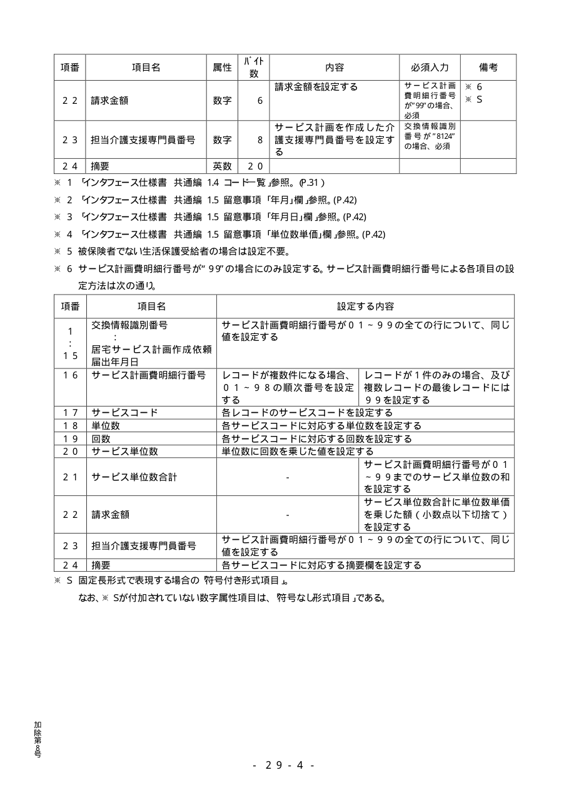
| 項番 | 項目名 | 属性 | 桁数 | 内容 | 必須 | 備考 | その他の列 |
|---|---|---|---|---|---|---|---|
| ２２ | 請求金額 | 数字 | 6 | 請求金額を設定する | ※ 6 ※ S | 必須入力: サービス計画費明細行番号が“99”の場合、必須 | |
| ２３ | 担当介護支援専門員番号 | 数字 | 8 | サービス計画を作成した介護支援専門員番号を設定する | 必須入力: 交換情報識別番号が“8124”の場合、必須 | ||
| ２４ | 摘要 | 英数 | 20 | 必須入力: － |
| 項番 | 項目名 | 属性 | 桁数 | 内容 | 必須 | 備考 | その他の列 |
|---|---|---|---|---|---|---|---|
| 1 ： 15 | 交換情報識別番号 ： 居宅サービス計画作成依頼届出年月日 | サービス計画費明細行番号が01～99の全ての行について、同じ値を設定する | |||||
| 16 | サービス計画費明細行番号 | レコードが複数件になる場合、01～98の順次番号を設定する レコードが1件のみの場合、及び複数レコードの最後レコードには99を設定する | |||||
| 17 | サービスコード | 各レコードのサービスコードを設定する | |||||
| 18 | 単位数 | 各サービスコードに対応する単位数を設定する | |||||
| 19 | 回数 | 各サービスコードに対応する回数を設定する | |||||
| 20 | サービス単位数 | 単位数に回数を乗じた値を設定する | |||||
| 21 | サービス単位数合計 | - サービス計画費明細行番号が01～99までのサービス単位数の和を設定する | |||||
| 22 | 請求金額 | - サービス単位数合計に単位数単価を乗じた額（小数点以下切捨て）を設定する | |||||
| 23 | 担当介護支援専門員番号 | サービス計画費明細行番号が01～99の全ての行について、同じ値を設定する | |||||
| 24 | 摘要 | 各サービスコードに対応する摘要欄を設定する |
| 項番 | 項目名 | 属性 | 桁数 | 内容 | 必須 | 備考 | その他の列 |
|---|---|---|---|---|---|---|---|
| ２２ | 請求金額 | 数字 | 6 | 請求金額を設定する | ※6 ※S | 必須入力: サービス計画費明細行番号が”99”の場合、必須 | |
| ２３ | 担当介護支援専門員番号 | 数字 | 8 | サービス計画を作成した介護支援専門員番号を設定する | 必須入力: 交換情報識別番号が”8124”の場合、必須 | ||
| ２４ | 摘要 | 英数 | 20 | 必須入力: － |
| 項番 | 項目名 | 属性 | 桁数 | 内容 | 必須 | 備考 | その他の列 |
|---|---|---|---|---|---|---|---|
| 1 : 15 | 交換情報識別番号 : 居宅サービス計画作成依頼届出年月日 | サービス計画費明細行番号が０１～９９の全ての行について、同じ値を設定する | |||||
| １６ | サービス計画費明細行番号 | レコードが複数件になる場合、０１～９８の順次番号を設定する レコードが１件のみの場合、及び複数レコードの最後レコードには９９を設定する | |||||
| １７ | サービスコード | 各レコードのサービスコードを設定する | |||||
| １８ | 単位数 | 各サービスコードに対応する単位数を設定する | |||||
| １９ | 回数 | 各サービスコードに対応する回数を設定する | |||||
| ２０ | サービス単位数 | 単位数に回数を乗じた値を設定する | |||||
| ２１ | サービス単位数合計 | - サービス計画費明細行番号が０１～９９までのサービス単位数の和を設定する | |||||
| ２２ | 請求金額 | - サービス単位数合計に単位数単価を乗じた額（小数点以下切捨て）を設定する | |||||
| ２３ | 担当介護支援専門員番号 | サービス計画費明細行番号が０１～９９の全ての行について、同じ値を設定する | |||||
| ２４ | 摘要 | 各サービスコードに対応する摘要欄を設定する |
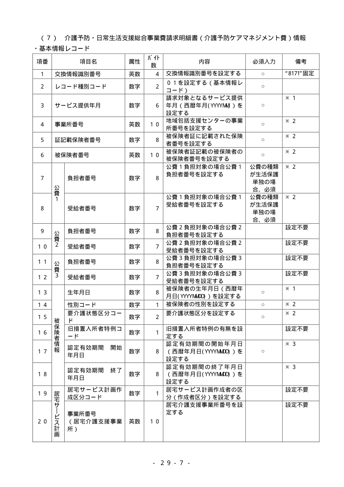
| 項番 | 項目名 | 属性 | 桁数 | 内容 | 必須 | 備考 | その他の列 |
|---|---|---|---|---|---|---|---|
| 1 | 交換情報識別番号 | 英数 | 4 | 交換情報識別番号を設定する | ○ | “8171”固定 | |
| 2 | レコード種別コード | 数字 | 2 | ０１を設定する（基本情報レコード） | ○ | ||
| 3 | サービス提供年月 | 数字 | 6 | 請求対象となるサービス提供年月（西暦年月(YYYYMM)）を設定する | ○ | ※ 1 | |
| 4 | 事業所番号 | 英数 | 10 | 地域包括支援センターの事業所番号を設定する | ○ | ※ 2 | |
| 5 | 証記載保険者番号 | 数字 | 8 | 被保険者証に記載された保険者番号を設定する | ○ | ※ 2 | |
| 6 | 被保険者番号 | 英数 | 10 | 被保険者証記載の被保険者番号を設定する | ○ | ※ 2 | |
| 7 | 公費1 > 負担者番号 | 数字 | 8 | 公費１負担対象の場合公費１負担者番号を設定する | 公費の種類が生活保護単独の場合、必須 | ※ 2 | |
| 8 | 公費1 > 受給者番号 | 数字 | 7 | 公費１負担対象の場合公費１受給者番号を設定する | 公費の種類が生活保護単独の場合、必須 | ※ 2 | |
| 9 | 公費2 > 負担者番号 | 数字 | 8 | 公費２負担対象の場合公費２負担者番号を設定する | 設定不要 | ||
| 10 | 公費2 > 受給者番号 | 数字 | 7 | 公費２負担対象の場合公費２受給者番号を設定する | 設定不要 | ||
| 11 | 公費3 > 負担者番号 | 数字 | 8 | 公費３負担対象の場合公費３負担者番号を設定する | 設定不要 | ||
| 12 | 公費3 > 受給者番号 | 数字 | 7 | 公費３負担対象の場合公費３受給者番号を設定する | 設定不要 | ||
| 13 | 被保険者情報 > 生年月日 | 数字 | 8 | 被保険者の生年月日（西暦年月日(YYYYMMDD)）を設定する | ○ | ※ 1 | |
| 14 | 被保険者情報 > 性別コード | 数字 | 1 | 被保険者の性別を設定する | ○ | ※ 2 | |
| 15 | 被保険者情報 > 要介護状態区分コード | 数字 | 2 | 要介護状態区分を設定する | ○ | ※ 2 | |
| 16 | 被保険者情報 > 旧措置入所者特例コード | 数字 | 1 | 旧措置入所者特例の有無を設定する | 設定不要 | ||
| 17 | 被保険者情報 > 認定有効期間 開始年月日 | 数字 | 8 | 認定有効期間の開始年月日（西暦年月日(YYYYMMDD)）を設定する | ○ | ※ 3 | |
| 18 | 被保険者情報 > 認定有効期間 終了年月日 | 数字 | 8 | 認定有効期間の終了年月日（西暦年月日(YYYYMMDD)）を設定する | ※ 3 | ||
| 19 | 居宅サービス計画 > 居宅サービス計画作成区分コード | 数字 | 1 | 居宅サービス計画作成者の区分（作成者区分）を設定する | 設定不要 | ||
| 20 | 居宅サービス計画 > 事業所番号（居宅介護支援事業所） | 英数 | 10 | 居宅介護支援事業所番号を設定する | 設定不要 |
| 項番 | 項目名 | 属性 | 桁数 | 内容 | 必須 | 備考 | その他の列 |
|---|---|---|---|---|---|---|---|
| 1 | 交換情報識別番号 | 英数 | 4 | 交換情報識別番号を設定する | ○ | “8171”固定 | |
| 2 | レコード種別コード | 数字 | 2 | ０１を設定する(基本情報レコード) | ○ | ||
| 3 | サービス提供年月 | 数字 | 6 | 請求対象となるサービス提供年月(西暦年月(YYYYMM))を設定する | ○ | ※1 | |
| 4 | 事業所番号 | 英数 | 10 | 地域包括支援センターの事業所番号を設定する | ○ | ※2 | |
| 5 | 証記載保険者番号 | 数字 | 8 | 被保険者証に記載された保険者番号を設定する | ○ | ※2 | |
| 6 | 被保険者番号 | 英数 | 10 | 被保険者証記載の被保険者の被保険者番号を設定する | ○ | ※2 | |
| 7 | 公費1 > 負担者番号 | 数字 | 8 | 公費1負担対象の場合公費1負担者番号を設定する | 公費の種類が生活保護単独の場合、必須 | ※2 | |
| 8 | 公費1 > 受給者番号 | 数字 | 7 | 公費1負担対象の場合公費1受給者番号を設定する | 公費の種類が生活保護単独の場合、必須 | ※2 | |
| 9 | 公費2 > 負担者番号 | 数字 | 8 | 公費2負担対象の場合公費2負担者番号を設定する | 設定不要 | ||
| 10 | 公費2 > 受給者番号 | 数字 | 7 | 公費2負担対象の場合公費2受給者番号を設定する | 設定不要 | ||
| 11 | 公費3 > 負担者番号 | 数字 | 8 | 公費3負担対象の場合公費3負担者番号を設定する | 設定不要 | ||
| 12 | 公費3 > 受給者番号 | 数字 | 7 | 公費3負担対象の場合公費3受給者番号を設定する | 設定不要 | ||
| 13 | 被保険者情報 > 生年月日 | 数字 | 8 | 被保険者の生年月日(西暦年月日(YYYYMMDD))を設定する | ○ | ※1 | |
| 14 | 被保険者情報 > 性別コード | 数字 | 1 | 被保険者の性別を設定する | ○ | ※2 | |
| 15 | 被保険者情報 > 要介護状態区分コード | 数字 | 2 | 要介護状態区分を設定する | ○ | ※2 | |
| 16 | 被保険者情報 > 旧措置入所者特例コード | 数字 | 1 | 旧措置入所者特例の有無を設定する | 設定不要 | ||
| 17 | 被保険者情報 > 認定有効期間 開始年月日 | 数字 | 8 | 認定有効期間の開始年月日(西暦年月日(YYYYMMDD))を設定する | ○ | ※3 | |
| 18 | 被保険者情報 > 認定有効期間 終了年月日 | 数字 | 8 | 認定有効期間の終了年月日(西暦年月日(YYYYMMDD))を設定する | ※3 | ||
| 19 | 居宅サービス計画 > 居宅サービス計画作成区分コード | 数字 | 1 | 居宅サービス計画作成者の区分(作成者区分)を設定する | 設定不要 | ||
| 20 | 居宅サービス計画 > 事業所番号(居宅介護支援事業所) | 英数 | 10 | 居宅介護支援事業所番号を設定する | 設定不要 |
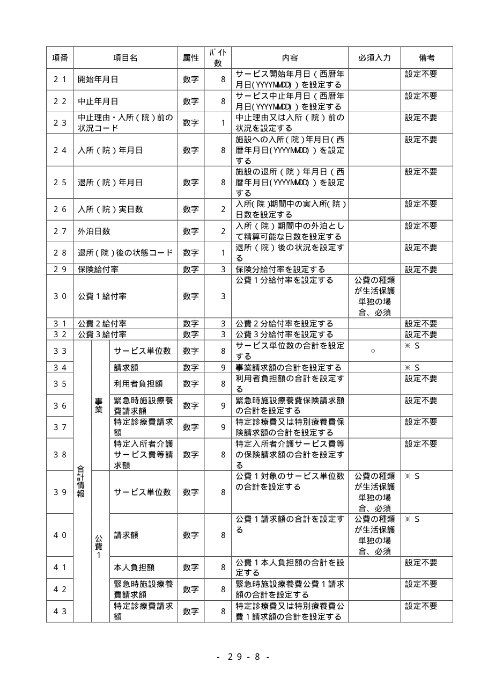
| 項番 | 項目名 | 属性 | 桁数 | 内容 | 必須 | 備考 | その他の列 |
|---|---|---|---|---|---|---|---|
| ２１ | 開始年月日 | 数字 | 8 | サービス開始年月日（西暦年月日(YYYYMMDD)）を設定する | 設定不要 | 必須入力: － | |
| ２２ | 中止年月日 | 数字 | 8 | サービス中止年月日（西暦年月日(YYYYMMDD)）を設定する | 設定不要 | 必須入力: － | |
| ２３ | 中止理由・入所（院）前の状況コード | 数字 | 1 | 中止理由又は入所（院）前の状況を設定する | 設定不要 | 必須入力: － | |
| ２４ | 入所（院）年月日 | 数字 | 8 | 施設への入所（院）年月日（西暦年月日(YYYYMMDD)）を設定する | 設定不要 | 必須入力: － | |
| ２５ | 退所（院）年月日 | 数字 | 8 | 施設の退所（院）年月日（西暦年月日(YYYYMMDD)）を設定する | 設定不要 | 必須入力: － | |
| ２６ | 入所（院）実日数 | 数字 | 2 | 入所(院)期間中の実入所(院)日数を設定する | 設定不要 | 必須入力: － | |
| ２７ | 外泊日数 | 数字 | 2 | 入所（院）期間中の外泊として精算可能な日数を設定する | 設定不要 | 必須入力: － | |
| ２８ | 退所(院)後の状態コード | 数字 | 1 | 退所（院）後の状況を設定する | 設定不要 | 必須入力: － | |
| ２９ | 保険給付率 | 数字 | 3 | 保険分給付率を設定する | 設定不要 | 必須入力: － | |
| ３０ | 公費１給付率 | 数字 | 3 | 公費１分給付率を設定する | 必須入力: 公費の種類が生活保護単独の場合、必須 | ||
| ３１ | 公費２給付率 | 数字 | 3 | 公費２分給付率を設定する | 設定不要 | 必須入力: － | |
| ３２ | 公費３給付率 | 数字 | 3 | 公費３分給付率を設定する | 設定不要 | 必須入力: － | |
| ３３ | 合計情報 > 事業 > サービス単位数 | 数字 | 8 | サービス単位数の合計を設定する | ※ S | 必須入力: ○ | |
| ３４ | 合計情報 > 事業 > 請求額 | 数字 | 9 | 事業請求額の合計を設定する | ※ S | 必須入力: － | |
| ３５ | 合計情報 > 事業 > 利用者負担額 | 数字 | 8 | 利用者負担額の合計を設定する | 設定不要 | 必須入力: － | |
| ３６ | 合計情報 > 事業 > 緊急時施設療養費請求額 | 数字 | 9 | 緊急時施設療養費保険請求額の合計を設定する | 設定不要 | 必須入力: － | |
| ３７ | 合計情報 > 事業 > 特定診療費請求額 | 数字 | 9 | 特定診療費又は特別療養費保険請求額の合計を設定する | 設定不要 | 必須入力: － | |
| ３８ | 合計情報 > 事業 > 特定入所者介護サービス費等請求額 | 数字 | 8 | 特定入所者介護サービス費等の保険請求額の合計を設定する | 設定不要 | 必須入力: － | |
| ３９ | 合計情報 > 公費１ > サービス単位数 | 数字 | 8 | 公費１対象のサービス単位数の合計を設定する | ※ S | 必須入力: 公費の種類が生活保護単独の場合、必須 | |
| ４０ | 合計情報 > 公費１ > 請求額 | 数字 | 8 | 公費１請求額の合計を設定する | ※ S | 必須入力: 公費の種類が生活保護単独の場合、必須 | |
| ４１ | 合計情報 > 公費１ > 本人負担額 | 数字 | 8 | 公費１本人負担額の合計を設定する | 設定不要 | 必須入力: － | |
| ４２ | 合計情報 > 公費１ > 緊急時施設療養費請求額 | 数字 | 8 | 緊急時施設療養費公費１請求額の合計を設定する | 設定不要 | 必須入力: － | |
| ４３ | 合計情報 > 公費１ > 特定診療費請求額 | 数字 | 8 | 特定診療費又は特別療養費公費１請求額の合計を設定する | 設定不要 | 必須入力: － |
| 項番 | 項目名 | 属性 | 桁数 | 内容 | 必須 | 備考 | その他の列 |
|---|---|---|---|---|---|---|---|
| 21 | 開始年月日 | 数字 | 8 | サービス開始年月日(西暦年月日(YYYYMMDD))を設定する | 設定不要 | ||
| 22 | 中止年月日 | 数字 | 8 | サービス中止年月日(西暦年月日(YYYYMMDD))を設定する | 設定不要 | ||
| 23 | 中止理由・入所(院)前の状況コード | 数字 | 1 | 中止理由又は入所(院)前の状況を設定する | 設定不要 | ||
| 24 | 入所(院)年月日 | 数字 | 8 | 施設への入所(院)年月日(西暦年月日(YYYYMMDD))を設定する | 設定不要 | ||
| 25 | 退所(院)年月日 | 数字 | 8 | 施設の退所(院)年月日(西暦年月日(YYYYMMDD))を設定する | 設定不要 | ||
| 26 | 入所(院)実日数 | 数字 | 2 | 入所(院)期間中の実入所(院)日数を設定する | 設定不要 | ||
| 27 | 外泊日数 | 数字 | 2 | 入所(院)期間中の外泊として精算可能な日数を設定する | 設定不要 | ||
| 28 | 退所(院)後の状態コード | 数字 | 1 | 退所(院)後の状況を設定する | 設定不要 | ||
| 29 | 保険給付率 | 数字 | 3 | 保険分給付率を設定する | 設定不要 | ||
| 30 | 公費1給付率 | 数字 | 3 | 公費1分給付率を設定する | 公費の種類が生活保護単独の場合、必須 | ||
| 31 | 公費2給付率 | 数字 | 3 | 公費2分給付率を設定する | 設定不要 | ||
| 32 | 公費3給付率 | 数字 | 3 | 公費3分給付率を設定する | 設定不要 | ||
| 33 | 合計情報 > 事業 > サービス単位数 | 数字 | 8 | サービス単位数の合計を設定する | ○ | ※S | |
| 34 | 合計情報 > 事業 > 請求額 | 数字 | 9 | 事業請求額の合計を設定する | ※S | ||
| 35 | 合計情報 > 事業 > 利用者負担額 | 数字 | 8 | 利用者負担額の合計を設定する | 設定不要 | ||
| 36 | 合計情報 > 事業 > 緊急時施設療養費請求額 | 数字 | 9 | 緊急時施設療養費保険請求額の合計を設定する | 設定不要 | ||
| 37 | 合計情報 > 事業 > 特定診療費請求額 | 数字 | 9 | 特定診療費又は特別療養費保険請求額の合計を設定する | 設定不要 | ||
| 38 | 合計情報 > 事業 > 特定入所者介護サービス費等請求額 | 数字 | 8 | 特定入所者介護サービス費等の保険請求額の合計を設定する | 設定不要 | ||
| 39 | 合計情報 > 公費1 > サービス単位数 | 数字 | 8 | 公費1対象のサービス単位数の合計を設定する | 公費の種類が生活保護単独の場合、必須 | ※S | |
| 40 | 合計情報 > 公費1 > 請求額 | 数字 | 8 | 公費1請求額の合計を設定する | 公費の種類が生活保護単独の場合、必須 | ※S | |
| 41 | 合計情報 > 公費1 > 本人負担額 | 数字 | 8 | 公費1本人負担額の合計を設定する | 設定不要 | ||
| 42 | 合計情報 > 公費1 > 緊急時施設療養費請求額 | 数字 | 8 | 緊急時施設療養費公費1請求額の合計を設定する | 設定不要 | ||
| 43 | 合計情報 > 公費1 > 特定診療費請求額 | 数字 | 8 | 特定診療費又は特別療養費公費1請求額の合計を設定する | 設定不要 |
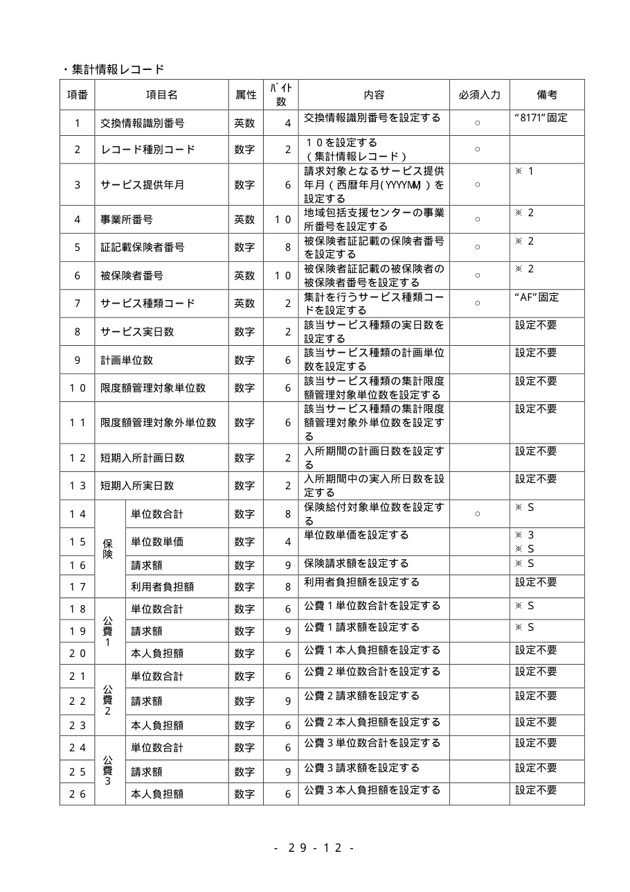
| 項番 | 項目名 | 属性 | 桁数 | 内容 | 必須 | 備考 | その他の列 |
|---|---|---|---|---|---|---|---|
| 1 | 交換情報識別番号 | 英数 | 4 | 交換情報識別番号を設定する | ○ | "8171"固定 | |
| 2 | レコード種別コード | 数字 | 2 | １０を設定する （集計情報レコード） | ○ | ||
| 3 | サービス提供年月 | 数字 | 6 | 請求対象となるサービス提供年月（西暦年月(YYYYMM)）を設定する | ○ | ※ 1 | |
| 4 | 事業所番号 | 英数 | 10 | 地域包括支援センターの事業所番号を設定する | ○ | ※ 2 | |
| 5 | 証記載保険者番号 | 数字 | 8 | 被保険者証記載の保険者番号を設定する | ○ | ※ 2 | |
| 6 | 被保険者番号 | 英数 | 10 | 被保険者証記載の被保険者の被保険者番号を設定する | ○ | ※ 2 | |
| 7 | サービス種類コード | 英数 | 2 | 集計を行うサービス種類コードを設定する | ○ | "AF"固定 | |
| 8 | サービス実日数 | 数字 | 2 | 該当サービス種類の実日数を設定する | 設定不要 | ||
| 9 | 計画単位数 | 数字 | 6 | 該当サービス種類の計画単位数を設定する | 設定不要 | ||
| １０ | 限度額管理対象単位数 | 数字 | 6 | 該当サービス種類の集計限度額管理対象単位数を設定する | 設定不要 | ||
| 11 | 限度額管理対象外単位数 | 数字 | 6 | 該当サービス種類の集計限度額管理対象外単位数を設定する | 設定不要 | ||
| 12 | 短期入所計画日数 | 数字 | 2 | 入所期間の計画日数を設定する | 設定不要 | ||
| 13 | 短期入所実日数 | 数字 | 2 | 入所期間中の実入所日数を設定する | 設定不要 | ||
| 14 | 保険 > 単位数合計 | 数字 | 8 | 保険給付対象単位数を設定する | ○ | ※ S | |
| 15 | 保険 > 単位数単価 | 数字 | 4 | 単位数単価を設定する | ※ 3 ※ S | ||
| 16 | 保険 > 請求額 | 数字 | 9 | 保険請求額を設定する | ※ S | ||
| 17 | 保険 > 利用者負担額 | 数字 | 8 | 利用者負担額を設定する | 設定不要 | ||
| 18 | 公費1 > 単位数合計 | 数字 | 6 | 公費１単位数合計を設定する | ※ S | ||
| 19 | 公費1 > 請求額 | 数字 | 9 | 公費１請求額を設定する | ※ S | ||
| 20 | 公費1 > 本人負担額 | 数字 | 6 | 公費１本人負担額を設定する | 設定不要 | ||
| 21 | 公費2 > 単位数合計 | 数字 | 6 | 公費２単位数合計を設定する | 設定不要 | ||
| 22 | 公費2 > 請求額 | 数字 | 9 | 公費２請求額を設定する | 設定不要 | ||
| 23 | 公費2 > 本人負担額 | 数字 | 6 | 公費２本人負担額を設定する | 設定不要 | ||
| 24 | 公費3 > 単位数合計 | 数字 | 6 | 公費３単位数合計を設定する | 設定不要 | ||
| 25 | 公費3 > 請求額 | 数字 | 9 | 公費３請求額を設定する | 設定不要 | ||
| 26 | 公費3 > 本人負担額 | 数字 | 6 | 公費３本人負担額を設定する | 設定不要 |
| 項番 | 項目名 | 属性 | 桁数 | 内容 | 必須 | 備考 | その他の列 |
|---|---|---|---|---|---|---|---|
| 1 | 交換情報識別番号 | 英数 | 4 | 交換情報識別番号を設定する | ○ | “8171”固定 | |
| 2 | レコード種別コード | 数字 | 2 | １０を設定する （集計情報レコード） | ○ | ||
| 3 | サービス提供年月 | 数字 | 6 | 請求対象となるサービス提供年月（西暦年月(YYYYMM)）を設定する | ○ | ※1 | |
| 4 | 事業所番号 | 英数 | 10 | 地域包括支援センターの事業所番号を設定する | ○ | ※2 | |
| 5 | 証記載保険者番号 | 数字 | 8 | 被保険者証記載の保険者番号を設定する | ○ | ※2 | |
| 6 | 被保険者番号 | 英数 | 10 | 被保険者証記載の被保険者の被保険者番号を設定する | ○ | ※2 | |
| 7 | サービス種類コード | 英数 | 2 | 集計を行うサービス種類コードを設定する | ○ | “AF”固定 | |
| 8 | サービス実日数 | 数字 | 2 | 該当サービス種類の実日数を設定する | 設定不要 | ||
| 9 | 計画単位数 | 数字 | 6 | 該当サービス種類の計画単位数を設定する | 設定不要 | ||
| １０ | 限度額管理対象単位数 | 数字 | 6 | 該当サービス種類の集計限度額管理対象単位数を設定する | 設定不要 | ||
| １１ | 限度額管理対象外単位数 | 数字 | 6 | 該当サービス種類の集計限度額管理対象外単位数を設定する | 設定不要 | ||
| １２ | 短期入所計画日数 | 数字 | 2 | 入所期間の計画日数を設定する | 設定不要 | ||
| １３ | 短期入所実日数 | 数字 | 2 | 入所期間中の実入所日数を設定する | 設定不要 | ||
| １４ | 保険 > 単位数合計 | 数字 | 8 | 保険給付対象単位数を設定する | ○ | ※S | |
| １５ | 保険 > 単位数単価 | 数字 | 4 | 単位数単価を設定する | ※3 ※S | ||
| １６ | 保険 > 請求額 | 数字 | 9 | 保険請求額を設定する | ※S | ||
| １７ | 保険 > 利用者負担額 | 数字 | 8 | 利用者負担額を設定する | 設定不要 | ||
| １８ | 公費1 > 単位数合計 | 数字 | 6 | 公費1単位数合計を設定する | ※S | ||
| １９ | 公費1 > 請求額 | 数字 | 9 | 公費1請求額を設定する | ※S | ||
| ２０ | 公費1 > 本人負担額 | 数字 | 6 | 公費1本人負担額を設定する | 設定不要 | ||
| ２１ | 公費2 > 単位数合計 | 数字 | 6 | 公費2単位数合計を設定する | 設定不要 | ||
| ２２ | 公費2 > 請求額 | 数字 | 9 | 公費2請求額を設定する | 設定不要 | ||
| ２３ | 公費2 > 本人負担額 | 数字 | 6 | 公費2本人負担額を設定する | 設定不要 | ||
| ２４ | 公費3 > 単位数合計 | 数字 | 6 | 公費3単位数合計を設定する | 設定不要 | ||
| ２５ | 公費3 > 請求額 | 数字 | 9 | 公費3請求額を設定する | 設定不要 | ||
| ２６ | 公費3 > 本人負担額 | 数字 | 6 | 公費3本人負担額を設定する | 設定不要 |
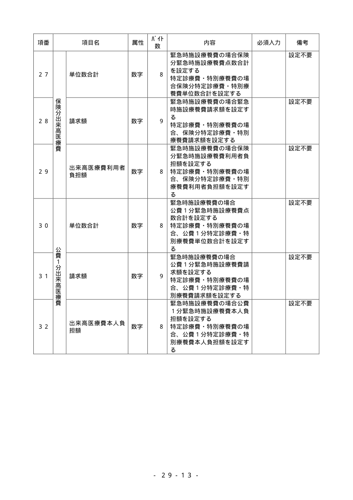
| 項番 | 項目名 | 属性 | 桁数 | 内容 | 必須 | 備考 | その他の列 |
|---|---|---|---|---|---|---|---|
| ２７ | 保険分出来高医療費 > 単位数合計 | 数字 | 8 | 緊急時施設療養費の場合保険分緊急時施設療養費点数合計を設定する 特定診療費・特別療養費の場合保険分特定診療費・特別療養費単位数合計を設定する | 設定不要 | ||
| ２８ | 保険分出来高医療費 > 請求額 | 数字 | 9 | 緊急時施設療養費の場合緊急時施設療養費請求額を設定する 特定診療費・特別療養費の場合、保険分特定診療費・特別療養費請求額を設定する | 設定不要 | ||
| ２９ | 保険分出来高医療費 > 出来高医療費利用者負担額 | 数字 | 8 | 緊急時施設療養費の場合保険分緊急時施設療養費利用者負担額を設定する 特定診療費・特別療養費の場合、保険分特定診療費・特別療養費利用者負担額を設定する | 設定不要 | ||
| ３０ | 公費１分出来高医療費 > 単位数合計 | 数字 | 8 | 緊急時施設療養費の場合 公費１分緊急時施設療養費点数合計を設定する 特定診療費・特別療養費の場合、公費１分特定診療費・特別療養費単位数合計を設定する | 設定不要 | ||
| ３１ | 公費１分出来高医療費 > 請求額 | 数字 | 9 | 緊急時施設療養費の場合 公費１分緊急時施設療養費請求額を設定する 特定診療費・特別療養費の場合、公費１分特定診療費・特別療養費請求額を設定する | 設定不要 | ||
| ３２ | 公費１分出来高医療費 > 出来高医療費本人負担額 | 数字 | 8 | 緊急時施設療養費の場合公費１分緊急時施設療養費本人負担額を設定する 特定診療費・特別療養費の場合、公費１分特定診療費・特別療養費本人負担額を設定する | 設定不要 |
| 項番 | 項目名 | 属性 | 桁数 | 内容 | 必須 | 備考 | その他の列 |
|---|---|---|---|---|---|---|---|
| ２７ | 保険分出来高医療費 > 単位数合計 | 数字 | 8 | 緊急時施設療養費の場合保険分緊急時施設療養点数合計を設定する 特定診療費・特別療養費の場合保険分特定診療費・特別療養費単位数合計を設定する | 設定不要 | ||
| ２８ | 保険分出来高医療費 > 請求額 | 数字 | 9 | 緊急時施設療養費の場合緊急時施設療養費請求額を設定する 特定診療費・特別療養費の場合、保険分特定診療費・特別療養費請求額を設定する | 設定不要 | ||
| ２９ | 保険分出来高医療費 > 出来高医療費利用者負担額 | 数字 | 8 | 緊急時施設療養費の場合保険分緊急時施設療養費利用者負担額を設定する 特定診療費・特別療養費の場合、保険分特定診療費・特別療養費利用者負担額を設定する | 設定不要 | ||
| ３０ | 公費1分出来高医療費 > 単位数合計 | 数字 | 8 | 緊急時施設療養費の場合 公費１分緊急時施設療養費点数合計を設定する 特定診療費・特別療養費の場合、公費１分特定診療費・特別療養費単位数合計を設定する | 設定不要 | ||
| ３１ | 公費1分出来高医療費 > 請求額 | 数字 | 9 | 緊急時施設療養費の場合 公費１分緊急時施設療養費請求額を設定する 特定診療費・特別療養費の場合、公費１分特定診療費・特別療養費請求額を設定する | 設定不要 | ||
| ３２ | 公費1分出来高医療費 > 出来高医療費本人負担額 | 数字 | 8 | 緊急時施設療養費の場合公費１分緊急時施設療養費本人負担額を設定する 特定診療費・特別療養費の場合、公費１分特定診療費・特別療養費本人負担額を設定する | 設定不要 |
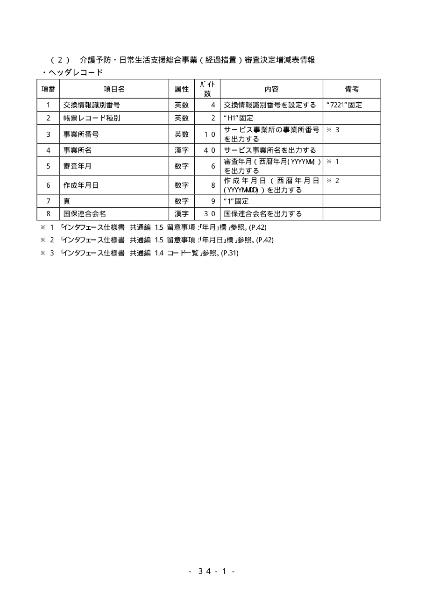
| 項番 | 項目名 | 属性 | 桁数 | 内容 | 必須 | 備考 | その他の列 |
|---|---|---|---|---|---|---|---|
| 1 | 交換情報識別番号 | 英数 | 4 | 交換情報識別番号を設定する | "7221"固定 | ||
| 2 | 帳票レコード種別 | 英数 | 2 | "H1"固定 | |||
| 3 | 事業所番号 | 英数 | 10 | サービス事業所の事業所番号を出力する | ※ 3 | ||
| 4 | 事業所名 | 漢字 | 40 | サービス事業所名を出力する | |||
| 5 | 審査年月 | 数字 | 6 | 審査年月(西暦年月(YYYYMM))を出力する | ※ 1 | ||
| 6 | 作成年月日 | 数字 | 8 | 作成年月日(西暦年月日(YYYYMMDD))を出力する | ※ 2 | ||
| 7 | 頁 | 数字 | 9 | "1"固定 | |||
| 8 | 国保連合会名 | 漢字 | 30 | 国保連合会名を出力する |
| 項番 | 項目名 | 属性 | 桁数 | 内容 | 必須 | 備考 | その他の列 |
|---|---|---|---|---|---|---|---|
| 1 | 交換情報識別番号 | 英数 | 4 | 交換情報識別番号を設定する | “7221”固定 | ||
| 2 | 帳票レコード種別 | 英数 | 2 | “H1”固定 | |||
| 3 | 事業所番号 | 英数 | 10 | サービス事業所の事業所番号を出力する | ※3 | ||
| 4 | 事業所名 | 漢字 | 40 | サービス事業所名を出力する | |||
| 5 | 審査年月 | 数字 | 6 | 審査年月(西暦年月(YYYYMM))を出力する | ※1 | ||
| 6 | 作成年月日 | 数字 | 8 | 作成年月日(西暦年月日(YYYYMMDD))を出力する | ※2 | ||
| 7 | 頁 | 数字 | 9 | “1”固定 | |||
| 8 | 国保連合会名 | 漢字 | 30 | 国保連合会名を出力する |
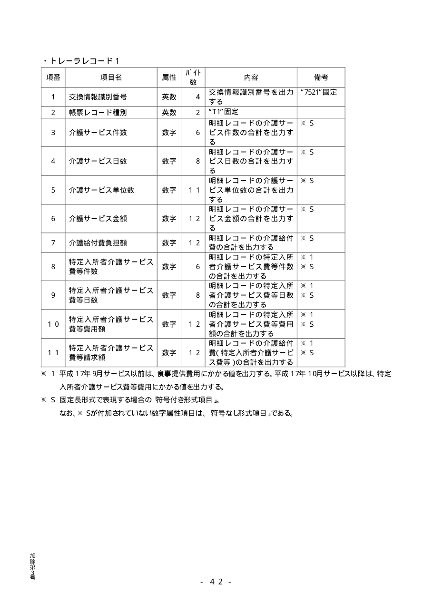
| 項番 | 項目名 | 属性 | 桁数 | 内容 | 必須 | 備考 | その他の列 |
|---|---|---|---|---|---|---|---|
| 1 | 交換情報識別番号 | 英数 | 4 | 交換情報識別番号を出力する | "7521"固定 | ||
| 2 | 帳票レコード種別 | 英数 | 2 | "T1"固定 | |||
| 3 | 介護サービス件数 | 数字 | 6 | 明細レコードの介護サービス件数の合計を出力する | ※ S | ||
| 4 | 介護サービス日数 | 数字 | 8 | 明細レコードの介護サービス日数の合計を出力する | ※ S | ||
| 5 | 介護サービス単位数 | 数字 | 11 | 明細レコードの介護サービス単位数の合計を出力する | ※ S | ||
| 6 | 介護サービス金額 | 数字 | 12 | 明細レコードの介護サービス金額の合計を出力する | ※ S | ||
| 7 | 介護給付費負担額 | 数字 | 12 | 明細レコードの介護給付費の合計を出力する | ※ S | ||
| 8 | 特定入所者介護サービス費等件数 | 数字 | 6 | 明細レコードの特定入所者介護サービス費等件数の合計を出力する | ※ 1 ※ S | ||
| 9 | 特定入所者介護サービス費等日数 | 数字 | 8 | 明細レコードの特定入所者介護サービス費等日数の合計を出力する | ※ 1 ※ S | ||
| 10 | 特定入所者介護サービス費等費用額 | 数字 | 12 | 明細レコードの特定入所者介護サービス費等費用額の合計を出力する | ※ 1 ※ S | ||
| 11 | 特定入所者介護サービス費等請求額 | 数字 | 12 | 明細レコードの介護給付費( 特定入所者介護サービス費等 )の合計を出力する | ※ 1 ※ S |
| 項番 | 項目名 | 属性 | 桁数 | 内容 | 必須 | 備考 | その他の列 |
|---|---|---|---|---|---|---|---|
| 1 | 交換情報識別番号 | 英数 | 4 | 交換情報識別番号を出力する | “7521”固定 | ||
| 2 | 帳票レコード種別 | 英数 | 2 | “T1”固定 | |||
| 3 | 介護サービス件数 | 数字 | 6 | 明細レコードの介護サービス件数の合計を出力する | ※Ｓ | ||
| 4 | 介護サービス日数 | 数字 | 8 | 明細レコードの介護サービス日数の合計を出力する | ※Ｓ | ||
| 5 | 介護サービス単位数 | 数字 | 11 | 明細レコードの介護サービス単位数の合計を出力する | ※Ｓ | ||
| 6 | 介護サービス金額 | 数字 | 12 | 明細レコードの介護サービス金額の合計を出力する | ※Ｓ | ||
| 7 | 介護給付費負担額 | 数字 | 12 | 明細レコードの介護給付費の合計を出力する | ※Ｓ | ||
| 8 | 特定入所者介護サービス費等件数 | 数字 | 6 | 明細レコードの特定入所者介護サービス費等件数の合計を出力する | ※１ ※Ｓ | ||
| 9 | 特定入所者介護サービス費等日数 | 数字 | 8 | 明細レコードの特定入所者介護サービス費等日数の合計を出力する | ※１ ※Ｓ | ||
| １０ | 特定入所者介護サービス費等費用額 | 数字 | 12 | 明細レコードの特定入所者介護サービス費等費用額の合計を出力する | ※１ ※Ｓ | ||
| １１ | 特定入所者介護サービス費等請求額 | 数字 | 12 | 明細レコードの介護給付費(特定入所者介護サービス費等)の合計を出力する | ※１ ※Ｓ |
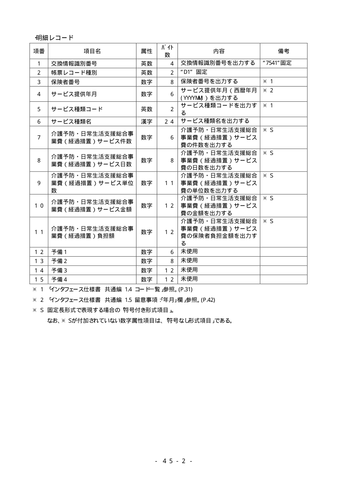
| 項番 | 項目名 | 属性 | 桁数 | 内容 | 必須 | 備考 | その他の列 |
|---|---|---|---|---|---|---|---|
| 1 | 交換情報識別番号 | 英数 | 4 | 交換情報識別番号を出力する | "7541"固定 | ||
| 2 | 帳票レコード種別 | 英数 | 2 | "D1"固定 | |||
| 3 | 保険者番号 | 数字 | 8 | 保険者番号を出力する | ※ 1 | ||
| 4 | サービス提供年月 | 数字 | 6 | サービス提供年月（西暦年月(YYYYMM)）を出力する | ※ 2 | ||
| 5 | サービス種類コード | 英数 | 2 | サービス種類コードを出力する | ※ 1 | ||
| 6 | サービス種類名 | 漢字 | 24 | サービス種類名を出力する | |||
| 7 | 介護予防・日常生活支援総合事業費（経過措置）サービス件数 | 数字 | 6 | 介護予防・日常生活支援総合事業費（経過措置）サービス費の件数を出力する | ※ S | ||
| 8 | 介護予防・日常生活支援総合事業費（経過措置）サービス日数 | 数字 | 8 | 介護予防・日常生活支援総合事業費（経過措置）サービス費の日数を出力する | ※ S | ||
| 9 | 介護予防・日常生活支援総合事業費（経過措置）サービス単位数 | 数字 | 11 | 介護予防・日常生活支援総合事業費（経過措置）サービス費の単位数を出力する | ※ S | ||
| 10 | 介護予防・日常生活支援総合事業費（経過措置）サービス金額 | 数字 | 12 | 介護予防・日常生活支援総合事業費（経過措置）サービス費の金額を出力する | ※ S | ||
| 11 | 介護予防・日常生活支援総合事業費（経過措置）負担額 | 数字 | 12 | 介護予防・日常生活支援総合事業費（経過措置）サービス費の保険者負担金額を出力する | ※ S | ||
| 12 | 予備1 | 数字 | 6 | 未使用 | |||
| 13 | 予備2 | 数字 | 8 | 未使用 | |||
| 14 | 予備3 | 数字 | 12 | 未使用 | |||
| 15 | 予備4 | 数字 | 12 | 未使用 |
| 項番 | 項目名 | 属性 | 桁数 | 内容 | 必須 | 備考 | その他の列 |
|---|---|---|---|---|---|---|---|
| 1 | 交換情報識別番号 | 英数 | 4 | 交換情報識別番号を出力する | “7541”固定 | ||
| 2 | 帳票レコード種別 | 英数 | 2 | “D1” 固定 | |||
| 3 | 保険者番号 | 数字 | 8 | 保険者番号を出力する | ※ 1 | ||
| 4 | サービス提供年月 | 数字 | 6 | サービス提供年月（西暦年月(YYYYMM)）を出力する | ※ 2 | ||
| 5 | サービス種類コード | 英数 | 2 | サービス種類コードを出力する | ※ 1 | ||
| 6 | サービス種類名 | 漢字 | 24 | サービス種類名を出力する | |||
| 7 | 介護予防・日常生活支援総合事業費（経過措置）サービス件数 | 数字 | 6 | 介護予防・日常生活支援総合事業費（経過措置）サービス費の件数を出力する | ※ S | ||
| 8 | 介護予防・日常生活支援総合事業費（経過措置）サービス日数 | 数字 | 8 | 介護予防・日常生活支援総合事業費（経過措置）サービス費の日数を出力する | ※ S | ||
| 9 | 介護予防・日常生活支援総合事業費（経過措置）サービス単位数 | 数字 | 11 | 介護予防・日常生活支援総合事業費（経過措置）サービス費の単位数を出力する | ※ S | ||
| １０ | 介護予防・日常生活支援総合事業費（経過措置）サービス金額 | 数字 | 12 | 介護予防・日常生活支援総合事業費（経過措置）サービス費の金額を出力する | ※ S | ||
| １１ | 介護予防・日常生活支援総合事業費（経過措置）負担額 | 数字 | 12 | 介護予防・日常生活支援総合事業費（経過措置）サービス費の保険者負担金額を出力する | ※ S | ||
| １２ | 予備1 | 数字 | 6 | 未使用 | |||
| １３ | 予備2 | 数字 | 8 | 未使用 | |||
| １４ | 予備3 | 数字 | 12 | 未使用 | |||
| １５ | 予備4 | 数字 | 12 | 未使用 |
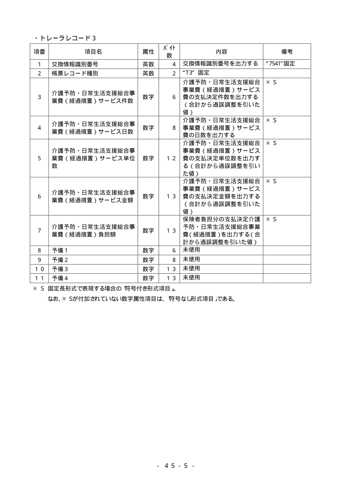
| 項番 | 項目名 | 属性 | 桁数 | 内容 | 必須 | 備考 | その他の列 |
|---|---|---|---|---|---|---|---|
| 1 | 交換情報識別番号 | 英数 | 4 | 交換情報識別番号を出力する | "7541"固定 | ||
| 2 | 帳票レコード種別 | 英数 | 2 | "T3" 固定 | |||
| 3 | 介護予防・日常生活支援総合事業費（経過措置）サービス件数 | 数字 | 6 | 介護予防・日常生活支援総合事業費（経過措置）サービス費の支払決定件数を出力する（合計から過誤調整を引いた値） | ※S | ||
| 4 | 介護予防・日常生活支援総合事業費（経過措置）サービス日数 | 数字 | 8 | 介護予防・日常生活支援総合事業費（経過措置）サービス費の日数を出力する | ※S | ||
| 5 | 介護予防・日常生活支援総合事業費（経過措置）サービス単位数 | 数字 | 12 | 介護予防・日常生活支援総合事業費（経過措置）サービス費の支払決定単位数を出力する（合計から過誤調整を引いた値） | ※S | ||
| 6 | 介護予防・日常生活支援総合事業費（経過措置）サービス金額 | 数字 | 13 | 介護予防・日常生活支援総合事業費（経過措置）サービス費の支払決定金額を出力する（合計から過誤調整を引いた値） | ※S | ||
| 7 | 介護予防・日常生活支援総合事業費（経過措置）負担額 | 数字 | 13 | 保険者負担分の支払決定介護予防・日常生活支援総合事業費(経過措置)を出力する(合計から過誤調整を引いた値) | ※S | ||
| 8 | 予備1 | 数字 | 6 | 未使用 | |||
| 9 | 予備2 | 数字 | 8 | 未使用 | |||
| １０ | 予備3 | 数字 | 13 | 未使用 | |||
| １１ | 予備4 | 数字 | 13 | 未使用 |
| 項番 | 項目名 | 属性 | 桁数 | 内容 | 必須 | 備考 | その他の列 |
|---|---|---|---|---|---|---|---|
| 1 | 交換情報識別番号 | 英数 | 4 | 交換情報識別番号を出力する | “7541”固定 | ||
| 2 | 帳票レコード種別 | 英数 | 2 | “T3” 固定 | |||
| 3 | 介護予防・日常生活支援総合事業費（経過措置）サービス件数 | 数字 | 6 | 介護予防・日常生活支援総合事業費（経過措置）サービス費の支払決定件数を出力する（合計から過誤調整を引いた値） | ※S | ||
| 4 | 介護予防・日常生活支援総合事業費（経過措置）サービス日数 | 数字 | 8 | 介護予防・日常生活支援総合事業費（経過措置）サービス費の日数を出力する | ※S | ||
| 5 | 介護予防・日常生活支援総合事業費（経過措置）サービス単位数 | 数字 | 12 | 介護予防・日常生活支援総合事業費（経過措置）サービス費の支払決定単位数を出力する（合計から過誤調整を引いた値） | ※S | ||
| 6 | 介護予防・日常生活支援総合事業費（経過措置）サービス金額 | 数字 | 13 | 介護予防・日常生活支援総合事業費（経過措置）サービス費の支払決定金額を出力する（合計から過誤調整を引いた値） | ※S | ||
| 7 | 介護予防・日常生活支援総合事業費（経過措置）負担額 | 数字 | 13 | 保険者負担分の支払決定介護予防・日常生活支援総合事業費(経過措置)を出力する(合計から過誤調整を引いた値) | ※S | ||
| 8 | 予備1 | 数字 | 6 | 未使用 | |||
| 9 | 予備2 | 数字 | 8 | 未使用 | |||
| １０ | 予備3 | 数字 | 13 | 未使用 | |||
| １１ | 予備4 | 数字 | 13 | 未使用 |
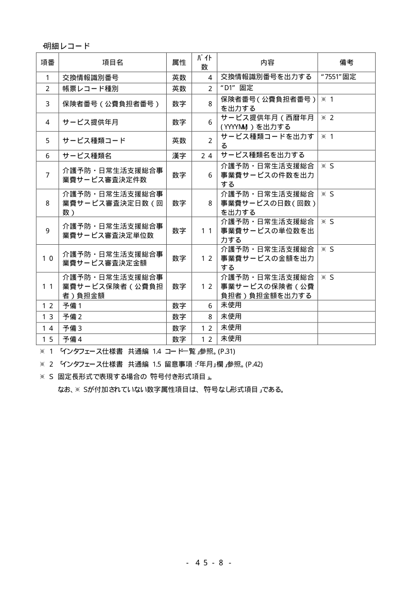
| 項番 | 項目名 | 属性 | 桁数 | 内容 | 必須 | 備考 | その他の列 |
|---|---|---|---|---|---|---|---|
| 1 | 交換情報識別番号 | 英数 | 4 | 交換情報識別番号を出力する | "7551"固定 | ||
| 2 | 帳票レコード種別 | 英数 | 2 | "D1" 固定 | |||
| 3 | 保険者番号（公費負担者番号） | 数字 | 8 | 保険者番号（公費負担者番号）を出力する | ※1 | ||
| 4 | サービス提供年月 | 数字 | 6 | サービス提供年月（西暦年月(YYYYMM)）を出力する | ※2 | ||
| 5 | サービス種類コード | 英数 | 2 | サービス種類コードを出力する | ※1 | ||
| 6 | サービス種類名 | 漢字 | 24 | サービス種類名を出力する | |||
| 7 | 介護予防・日常生活支援総合事業費サービス審査決定件数 | 数字 | 6 | 介護予防・日常生活支援総合事業費サービスの件数を出力する | ※S | ||
| 8 | 介護予防・日常生活支援総合事業費サービス審査決定日数（回数） | 数字 | 8 | 介護予防・日常生活支援総合事業費サービスの日数(回数)を出力する | ※S | ||
| 9 | 介護予防・日常生活支援総合事業費サービス審査決定単位数 | 数字 | 11 | 介護予防・日常生活支援総合事業費サービスの単位数を出力する | ※S | ||
| 10 | 介護予防・日常生活支援総合事業費サービス審査決定金額 | 数字 | 12 | 介護予防・日常生活支援総合事業費サービスの金額を出力する | ※S | ||
| 11 | 介護予防・日常生活支援総合事業費サービス保険者（公費負担者）負担金額 | 数字 | 12 | 介護予防・日常生活支援総合事業サービスの保険者（公費負担者）負担金額を出力する | ※S | ||
| 12 | 予備1 | 数字 | 6 | 未使用 | |||
| 13 | 予備2 | 数字 | 8 | 未使用 | |||
| 14 | 予備3 | 数字 | 12 | 未使用 | |||
| 15 | 予備4 | 数字 | 12 | 未使用 |
| 項番 | 項目名 | 属性 | 桁数 | 内容 | 必須 | 備考 | その他の列 |
|---|---|---|---|---|---|---|---|
| 1 | 交換情報識別番号 | 英数 | 4 | 交換情報識別番号を出力する | “7551”固定 | ||
| 2 | 帳票レコード種別 | 英数 | 2 | “D1” 固定 | |||
| 3 | 保険者番号(公費負担者番号) | 数字 | 8 | 保険者番号(公費負担者番号)を出力する | ※1 | ||
| 4 | サービス提供年月 | 数字 | 6 | サービス提供年月(西暦年月(YYYYMM))を出力する | ※2 | ||
| 5 | サービス種類コード | 英数 | 2 | サービス種類コードを出力する | ※1 | ||
| 6 | サービス種類名 | 漢字 | 24 | サービス種類名を出力する | |||
| 7 | 介護予防・日常生活支援総合事業費サービス審査決定件数 | 数字 | 6 | 介護予防・日常生活支援総合事業費サービスの件数を出力する | ※S | ||
| 8 | 介護予防・日常生活支援総合事業費サービス審査決定日数(回数) | 数字 | 8 | 介護予防・日常生活支援総合事業費サービスの日数(回数)を出力する | ※S | ||
| 9 | 介護予防・日常生活支援総合事業費サービス審査決定単位数 | 数字 | 11 | 介護予防・日常生活支援総合事業費サービスの単位数を出力する | ※S | ||
| 10 | 介護予防・日常生活支援総合事業費サービス審査決定金額 | 数字 | 12 | 介護予防・日常生活支援総合事業費サービスの金額を出力する | ※S | ||
| 11 | 介護予防・日常生活支援総合事業費サービス保険者(公費負担者)負担金額 | 数字 | 12 | 介護予防・日常生活支援総合事業サービスの保険者(公費負担者)負担金額を出力する | ※S | ||
| 12 | 予備1 | 数字 | 6 | 未使用 | |||
| 13 | 予備2 | 数字 | 8 | 未使用 | |||
| 14 | 予備3 | 数字 | 12 | 未使用 | |||
| 15 | 予備4 | 数字 | 12 | 未使用 |
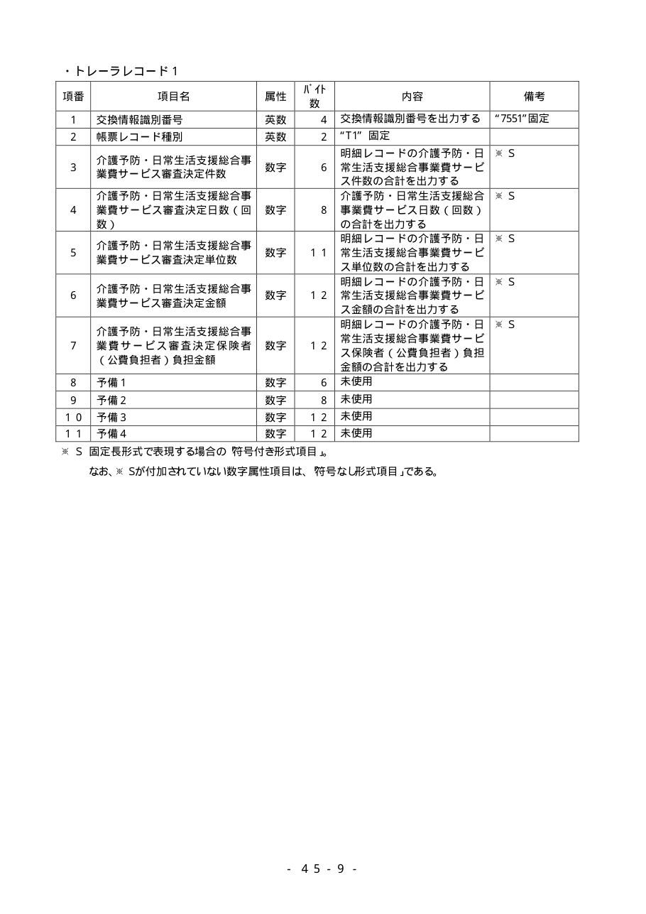
| 項番 | 項目名 | 属性 | 桁数 | 内容 | 必須 | 備考 | その他の列 |
|---|---|---|---|---|---|---|---|
| 1 | 交換情報識別番号 | 英数 | 4 | 交換情報識別番号を出力する | "7551"固定 | ||
| 2 | 帳票レコード種別 | 英数 | 2 | "T1" 固定 | |||
| 3 | 介護予防・日常生活支援総合事業費サービス審査決定件数 | 数字 | 6 | 明細レコードの介護予防・日常生活支援総合事業費サービス件数の合計を出力する | ※Ｓ | ||
| 4 | 介護予防・日常生活支援総合事業費サービス審査決定日数（回数） | 数字 | 8 | 介護予防・日常生活支援総合事業費サービス日数（回数）の合計を出力する | ※Ｓ | ||
| 5 | 介護予防・日常生活支援総合事業費サービス審査決定単位数 | 数字 | 11 | 明細レコードの介護予防・日常生活支援総合事業費サービス単位数の合計を出力する | ※Ｓ | ||
| 6 | 介護予防・日常生活支援総合事業費サービス審査決定金額 | 数字 | 12 | 明細レコードの介護予防・日常生活支援総合事業費サービス金額の合計を出力する | ※Ｓ | ||
| 7 | 介護予防・日常生活支援総合事業費サービス審査決定保険者（公費負担者）負担金額 | 数字 | 12 | 明細レコードの介護予防・日常生活支援総合事業費サービス保険者（公費負担者）負担金額の合計を出力する | ※Ｓ | ||
| 8 | 予備1 | 数字 | 6 | 未使用 | |||
| 9 | 予備2 | 数字 | 8 | 未使用 | |||
| 10 | 予備3 | 数字 | 12 | 未使用 | |||
| 11 | 予備4 | 数字 | 12 | 未使用 |
| 項番 | 項目名 | 属性 | 桁数 | 内容 | 必須 | 備考 | その他の列 |
|---|---|---|---|---|---|---|---|
| 1 | 交換情報識別番号 | 英数 | 4 | 交換情報識別番号を出力する | “7551”固定 | ||
| 2 | 帳票レコード種別 | 英数 | 2 | “T1” 固定 | |||
| 3 | 介護予防・日常生活支援総合事業費サービス審査決定件数 | 数字 | 6 | 明細レコードの介護予防・日常生活支援総合事業費サービス件数の合計を出力する | ※S | ||
| 4 | 介護予防・日常生活支援総合事業費サービス審査決定日数(回数) | 数字 | 8 | 介護予防・日常生活支援総合事業費サービス日数(回数)の合計を出力する | ※S | ||
| 5 | 介護予防・日常生活支援総合事業費サービス審査決定単位数 | 数字 | 11 | 明細レコードの介護予防・日常生活支援総合事業費サービス単位数の合計を出力する | ※S | ||
| 6 | 介護予防・日常生活支援総合事業費サービス審査決定金額 | 数字 | 12 | 明細レコードの介護予防・日常生活支援総合事業費サービス金額の合計を出力する | ※S | ||
| 7 | 介護予防・日常生活支援総合事業費サービス審査決定保険者(公費負担者)負担金額 | 数字 | 12 | 明細レコードの介護予防・日常生活支援総合事業費サービス保険者(公費負担者)負担金額の合計を出力する | ※S | ||
| 8 | 予備1 | 数字 | 6 | 未使用 | |||
| 9 | 予備2 | 数字 | 8 | 未使用 | |||
| 10 | 予備3 | 数字 | 12 | 未使用 | |||
| 11 | 予備4 | 数字 | 12 | 未使用 |
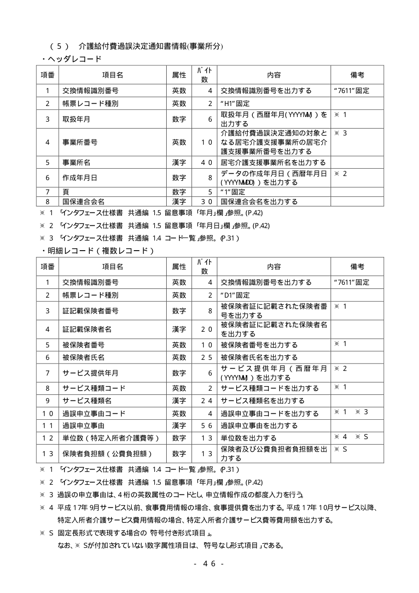
| 項番 | 項目名 | 属性 | 桁数 | 内容 | 必須 | 備考 | その他の列 |
|---|---|---|---|---|---|---|---|
| 1 | 交換情報識別番号 | 英数 | 4 | 交換情報識別番号を出力する | “7611”固定 | ||
| 2 | 帳票レコード種別 | 英数 | 2 | “H1”固定 | |||
| 3 | 取扱年月 | 数字 | 6 | 取扱年月（西暦年月(YYYYMM)）を出力する | ※ 1 | ||
| 4 | 事業所番号 | 英数 | 10 | 介護給付費過誤決定通知の対象となる居宅介護支援事業所の居宅介護支援事業所番号を出力する | ※ 3 | ||
| 5 | 事業所名 | 漢字 | 40 | 居宅介護支援事業所名を出力する | |||
| 6 | 作成年月日 | 数字 | 8 | データの作成年月日（西暦年月日(YYYYMMDD)）を出力する | ※ 2 | ||
| 7 | 頁 | 数字 | 5 | “1”固定 | |||
| 8 | 国保連合会名 | 漢字 | 30 | 国保連合会名を出力する |
| 項番 | 項目名 | 属性 | 桁数 | 内容 | 必須 | 備考 | その他の列 |
|---|---|---|---|---|---|---|---|
| 1 | 交換情報識別番号 | 英数 | 4 | 交換情報識別番号を出力する | “7611”固定 | ||
| 2 | 帳票レコード種別 | 英数 | 2 | “D1”固定 | |||
| 3 | 証記載保険者番号 | 数字 | 8 | 被保険者証に記載された保険者番号を出力する | ※ 1 | ||
| 4 | 証記載保険者名 | 漢字 | 20 | 被保険者証に記載された保険者名を出力する | |||
| 5 | 被保険者番号 | 英数 | 10 | 被保険者番号を出力する | ※ 1 | ||
| 6 | 被保険者氏名 | 英数 | 25 | 被保険者氏名を出力する | |||
| 7 | サービス提供年月 | 数字 | 6 | サービス提供年月（西暦年月(YYYYMM)）を出力する | ※ 2 | ||
| 8 | サービス種類コード | 英数 | 2 | サービス種類コードを出力する | ※ 1 | ||
| 9 | サービス種類名 | 漢字 | 24 | サービス種類名を出力する | |||
| 1 0 | 過誤申立事由コード | 英数 | 4 | 過誤申立事由コードを出力する | ※ 1 ※ 3 | ||
| 1 1 | 過誤申立事由 | 漢字 | 56 | 過誤申立事由を出力する | |||
| 1 2 | 単位数（特定入所者介護費等） | 数字 | 13 | 単位数を出力する | ※ 4 ※ S | ||
| 1 3 | 保険者負担額（公費負担額） | 数字 | 13 | 保険者及び公費負担者負担額を出力する | ※ S |
| 項番 | 項目名 | 属性 | 桁数 | 内容 | 必須 | 備考 | その他の列 |
|---|---|---|---|---|---|---|---|
| 1 | 交換情報識別番号 | 英数 | 4 | 交換情報識別番号を出力する | “7611”固定 | ||
| 2 | 帳票レコード種別 | 英数 | 2 | “H1”固定 | |||
| 3 | 取扱年月 | 数字 | 6 | 取扱年月（西暦年月(YYYYMM)）を出力する | ※1 | ||
| 4 | 事業所番号 | 英数 | 10 | 介護給付費過誤決定通知の対象となる居宅介護支援事業所の居宅介護支援事業所番号を出力する | ※3 | ||
| 5 | 事業所名 | 漢字 | 40 | 居宅介護支援事業所名を出力する | |||
| 6 | 作成年月日 | 数字 | 8 | データの作成年月日（西暦年月日(YYYYMMDD)）を出力する | ※2 | ||
| 7 | 頁 | 数字 | 5 | “1”固定 | |||
| 8 | 国保連合会名 | 漢字 | 30 | 国保連合会名を出力する |
| 項番 | 項目名 | 属性 | 桁数 | 内容 | 必須 | 備考 | その他の列 |
|---|---|---|---|---|---|---|---|
| 1 | 交換情報識別番号 | 英数 | 4 | 交換情報識別番号を出力する | “7611”固定 | ||
| 2 | 帳票レコード種別 | 英数 | 2 | “D1”固定 | |||
| 3 | 証記載保険者番号 | 数字 | 8 | 被保険者証に記載された保険者番号を出力する | ※1 | ||
| 4 | 証記載保険者名 | 漢字 | 20 | 被保険者証に記載された保険者名を出力する | |||
| 5 | 被保険者番号 | 英数 | 10 | 被保険者番号を出力する | ※1 | ||
| 6 | 被保険者氏名 | 英数 | 25 | 被保険者名を出力する | |||
| 7 | サービス提供年月 | 数字 | 6 | サービス提供年月（西暦年月(YYYYMM)）を出力する | ※2 | ||
| 8 | サービス種類コード | 英数 | 2 | サービス種類コードを出力する | ※1 | ||
| 9 | サービス種類名 | 漢字 | 24 | サービス種類名を出力する | |||
| 10 | 過誤申立事由コード | 英数 | 4 | 過誤申立事由コードを出力する | ※1 ※3 | ||
| 11 | 過誤申立事由 | 漢字 | 56 | 過誤申立事由を出力する | |||
| 12 | 単位数（特定入所者介護費等） | 数字 | 13 | 単位数を出力する | ※4 ※S | ||
| 13 | 保険者負担額（公費負担額） | 数字 | 13 | 保険者及び公費負担者負担額を出力する | ※S |
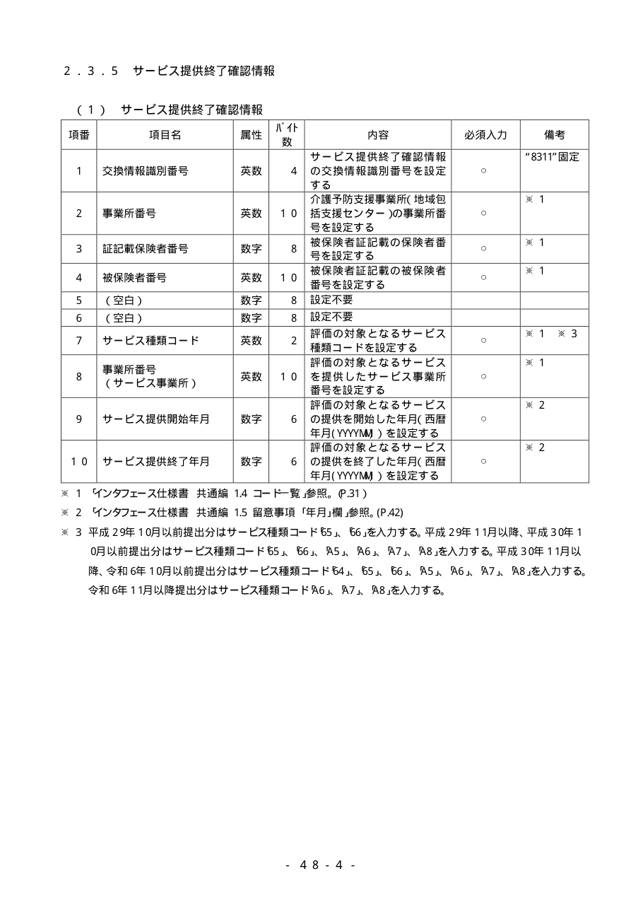
| 項番 | 項目名 | 属性 | 桁数 | 内容 | 必須 | 備考 | その他の列 |
|---|---|---|---|---|---|---|---|
| 1 | 交換情報識別番号 | 英数 | 4 | サービス提供終了確認情報の交換情報識別番号を設定する | ○ | "8311"固定 | |
| 2 | 事業所番号 | 英数 | 10 | 介護予防支援事業所( 地域包括支援センター )の事業所番号を設定する | ○ | ※ 1 | |
| 3 | 証記載保険者番号 | 数字 | 8 | 被保険者証記載の保険者番号を設定する | ○ | ※ 1 | |
| 4 | 被保険者番号 | 英数 | 10 | 被保険者証記載の被保険者番号を設定する | ○ | ※ 1 | |
| 5 | （空白） | 数字 | 8 | 設定不要 | |||
| 6 | （空白） | 数字 | 8 | 設定不要 | |||
| 7 | サービス種類コード | 英数 | 2 | 評価の対象となるサービス種類コードを設定する | ○ | ※ 1 ※ 3 | |
| 8 | 事業所番号（サービス事業所） | 英数 | 10 | 評価の対象となるサービスを提供したサービス事業所番号を設定する | ○ | ※ 1 | |
| 9 | サービス提供開始年月 | 数字 | 6 | 評価の対象となるサービスの提供を開始した年月(西暦年月(YYYYMM))を設定する | ○ | ※ 2 | |
| １０ | サービス提供終了年月 | 数字 | 6 | 評価の対象となるサービスの提供を終了した年月(西暦年月(YYYYMM))を設定する | ○ | ※ 2 |
| 項番 | 項目名 | 属性 | 桁数 | 内容 | 必須 | 備考 | その他の列 |
|---|---|---|---|---|---|---|---|
| 1 | 交換情報識別番号 | 英数 | 4 | サービス提供終了確認情報の交換情報識別番号を設定する | ○ | “8311”固定 | |
| 2 | 事業所番号 | 英数 | 10 | 介護予防支援事業所(地域包括支援センター)の事業所番号を設定する | ○ | ※1 | |
| 3 | 証記載保険者番号 | 数字 | 8 | 被保険者証記載の保険者番号を設定する | ○ | ※1 | |
| 4 | 被保険者番号 | 英数 | 10 | 被保険者証記載の被保険者番号を設定する | ○ | ※1 | |
| 5 | （空白） | 数字 | 8 | 設定不要 | |||
| 6 | （空白） | 数字 | 8 | 設定不要 | |||
| 7 | サービス種類コード | 英数 | 2 | 評価の対象となるサービス種類コードを設定する | ○ | ※1 ※3 | |
| 8 | 事業所番号（サービス事業所） | 英数 | 10 | 評価の対象となるサービスを提供したサービス事業所番号を設定する | ○ | ※1 | |
| 9 | サービス提供開始年月 | 数字 | 6 | 評価の対象となるサービスの提供を開始した年月(西暦年月(YYYYMM))を設定する | ○ | ※2 | |
| １０ | サービス提供終了年月 | 数字 | 6 | 評価の対象となるサービスの提供を終了した年月(西暦年月(YYYYMM))を設定する | ○ | ※2 |
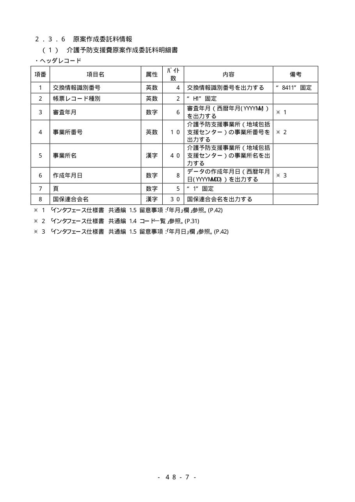
| 項番 | 項目名 | 属性 | 桁数 | 内容 | 必須 | 備考 | その他の列 |
|---|---|---|---|---|---|---|---|
| 1 | 交換情報識別番号 | 英数 | 4 | 交換情報識別番号を出力する | "8411"固定 | ||
| 2 | 帳票レコード種別 | 英数 | 2 | "H1"固定 | |||
| 3 | 審査年月 | 数字 | 6 | 審査年月（西暦年月(YYYYMM)）を出力する | ※1 | ||
| 4 | 事業所番号 | 英数 | 10 | 介護予防支援事業所（地域包括支援センター）の事業所番号を出力する | ※2 | ||
| 5 | 事業所名 | 漢字 | 40 | 介護予防支援事業所（地域包括支援センター）の事業所名を出力する | |||
| 6 | 作成年月日 | 数字 | 8 | データの作成年月日（西暦年月日(YYYYMMDD)）を出力する | ※3 | ||
| 7 | 頁 | 数字 | 5 | "1"固定 | |||
| 8 | 国保連合会名 | 漢字 | 30 | 国保連合会名を出力する |
| 項番 | 項目名 | 属性 | 桁数 | 内容 | 必須 | 備考 | その他の列 |
|---|---|---|---|---|---|---|---|
| 1 | 交換情報識別番号 | 英数 | 4 | 交換情報識別番号を出力する | “8411”固定 | ||
| 2 | 帳票レコード種別 | 英数 | 2 | “H1”固定 | |||
| 3 | 審査年月 | 数字 | 6 | 審査年月（西暦年月(YYYYMM)）を出力する | ※1 | ||
| 4 | 事業所番号 | 英数 | 10 | 介護予防支援事業所（地域包括支援センター）の事業所番号を出力する | ※2 | ||
| 5 | 事業所名 | 漢字 | 40 | 介護予防支援事業所（地域包括支援センター）の事業所名を出力する | |||
| 6 | 作成年月日 | 数字 | 8 | データの作成年月日（西暦年月日(YYYYMMDD)）を出力する | ※3 | ||
| 7 | 頁 | 数字 | 5 | “1”固定 | |||
| 8 | 国保連合会名 | 漢字 | 30 | 国保連合会名を出力する |